Gemini 3.8 Flash レイテンシ・アーキテクチャ評価レポート
Google AI Studio（google-genai SDK）における Streaming 配信・ThinkingConfig・Pydantic 適応型ルーティング・50ターン暗黙キャッシュの実機検証
Author: Yuichi Ito | Date: 2026-11 | Target: Google AI Studio (google-genai SDK / gemini-3.8-flash)
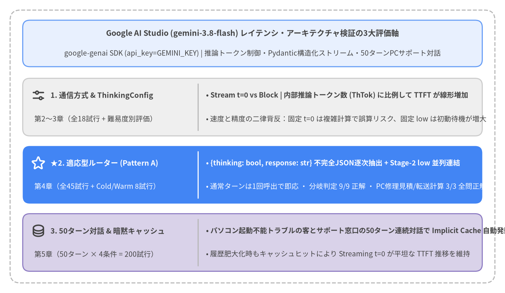
レポート概要と章構成（全5章）
本レポートは、Google AI Studio（google-genai SDK、genai.Client(api_key=GEMINI_KEY)）上の gemini-3.8-flash を対象に、パソコンが動かなくなったトラブルシュートを行う顧客とサポート窓口の対話シナリオを通じて、対話型AIアプリケーションの体感応答速度（TTFT：Time to First Token）と推論品質・長期対話スケーラビリティを両立するためのアーキテクチャ設計を、合計 271 回の実機 API 計測ログ（src/gemini_evaluation/）に基づいて体系化した技術白書である。
| 章 | タイトル | 検証内容と主要インサイト |
|---|---|---|
| 第1章 | エグゼクティブサマリー | 全検証の結論マトリクス、主要ベンチマーク指標の横断比較、および本番システムに向けた推奨アーキテクチャ設計指針。 |
| 第2章 | 前提知識と測定方法 | LLM推論の3フェーズ（Prefill・Thinking・Decoding）、2次元トラジェクトリ（経過時間×累積出力文字数）、Pydantic response_schema の Cold/Warm 文法コンパイル特性と pydantic_core.from_json(..., allow_partial="trailing-strings") による逐次差分抽出、および ExecutionTracer の計測基盤。 |
| 第3章 | パラメータとレイテンシー | Blocking（generate_content）vs. Streaming（generate_content_stream）× ThinkingConfig 全6段階（0, minimal, low, medium, high, default）の実測比較、内部推論トークン数と TTFT の線形スケーリング則、およびPCサポート難易度3段階（Tier 1〜3）における速度と計算正確性のトレードオフ。 |
| 第4章 | 適応型 Thinking ルーター（Adaptive Thinking Router） | 固定設定の二律背反を解消する3つの適応型分岐方式（Pattern A: Pydantic 2フィールド統合ストリーム、Pattern B: 1フィールド分離ルーター、Pattern C: 非JSON先頭タグ）の45試行比較。分岐精度 100%・複雑計算 100% を達成する Pattern A の優位性。 |
| 第5章 | マルチターンチャットでの挙動とコンテキストキャッシュ | パソコンが動かなくなった顧客とPCサポート窓口による50ターン連続対話（計200実行）における4条件の推移比較。自動発動する暗黙的コンテキストキャッシュ（Implicit Context Caching）と平坦な TTFT スケーリング。 |
| ドキュメントメタデータ | 内容 |
|---|---|
タイトル (title) |
Gemini 3.8 Flash レイテンシ・アーキテクチャ評価レポート |
サブタイトル (subtitle) |
Google AI Studio における Streaming・ThinkingConfig・適応型ルーティング・50ターン対話の実機検証 |
著者 (author) |
Yuichi Ito |
作成年月 (date) |
2026-11 |
| 検証 SDK / モデル | Google AI Studio google-genai SDK (genai.Client(api_key=GEMINI_KEY)) / gemini-3.8-flash |
| 計測コード・ログ | src/gemini_evaluation/llm_call.py, src/gemini_evaluation/adaptive_thinking.py, src/gemini_evaluation/tracer.py |
1. エグゼクティブサマリー
本レポートは、Google AI Studio（google-genai SDK、genai.Client(api_key=GEMINI_KEY)）上の gemini-3.8-flash を用いた対話型AIシステム（PCテクニカルサポート・トラブルシューティング対話）において、「高速な初回トークン表示（TTFT）」「多段階算数・条件比較（修理vs買い替え損益・データ転送時間・保守契約試算）の100%の計算正確性」「50ターン連続対話における平坦なレイテンシスケーリング」 の3要件を同時に達成するためのアーキテクチャ検証報告書である。合計 271 回の実機 API 実行ログ（単発 ThinkingConfig 18試行、適応型ルーティング 45試行、Pydantic スキーマ Cold/Warm 8試行、50ターン連続PCサポートチャット 200試行）の定量分析から、単発・マルチターンを問わず Streaming（generate_content_stream）を基本通信方式とし、Pydantic 2フィールド構造化ストリーム {thinking: bool, response: str} と pydantic_core.from_json(..., allow_partial="trailing-strings") による「適応型 Thinking ルーター（Pattern A）」を標準採用する構成 を第一推奨アーキテクチャとして結論づけた。
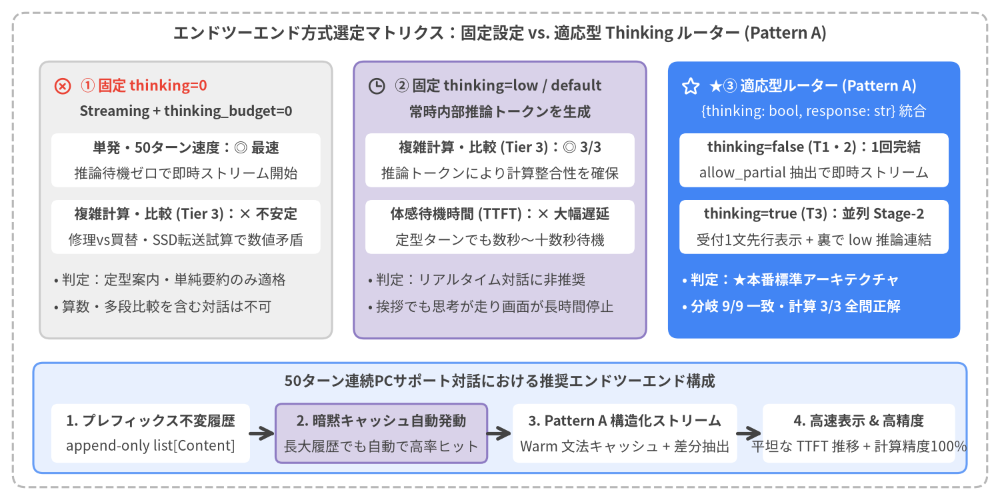
Source Code
from drawlib.canvas import save, setup
from drawlib.icons import phosphor
from drawlib.lines import line
from drawlib.shapes import rectangle
from drawlib.styles import Styles
from drawlib.text import text
setup(width=156, height=78, dpi=150)
# Outer structural frame
rectangle((78.0, 39.0), width=152.0, height=74.0, style=Styles.MutedDashed.patch(shape_r=2.0))
text(
(78.0, 72.8),
"エンドツーエンド方式選定マトリクス：固定設定 vs. 適応型 Thinking ルーター (Pattern A)",
style=Styles.DarkBold.patch(text_size=11.5),
)
cols = [
(
29.0,
"① 固定 thinking=0",
"Streaming + thinking_budget=0",
"単発・50ターン速度：◎ 最速",
"推論待機ゼロで即時ストリーム開始",
"複雑計算・比較 (Tier 3)：× 不安定",
"修理vs買替・SSD転送試算で数値矛盾",
[
"• 判定：定型案内・単純要約のみ適格",
"• 算数・多段比較を含む対話は不可",
],
Styles.Neutral,
Styles.DangerBold,
Styles.DarkBold,
phosphor.x_circle,
),
(
78.0,
"② 固定 thinking=low / default",
"常時内部推論トークンを生成",
"複雑計算・比較 (Tier 3)：◎ 3/3",
"推論トークンにより計算整合性を確保",
"体感待機時間 (TTFT)：× 大幅遅延",
"定型ターンでも数秒〜十数秒待機",
[
"• 判定：リアルタイム対話に非推奨",
"• 挨拶でも思考が走り画面が長時間停止",
],
Styles.SecondaryNeutral,
Styles.WarningBold,
Styles.DarkBold,
phosphor.clock,
),
(
127.0,
"★③ 適応型ルーター (Pattern A)",
"{thinking: bool, response: str} 統合",
"thinking=false (T1・2)：1回完結",
"allow_partial 抽出で即時ストリーム",
"thinking=true (T3)：並列 Stage-2",
"受付1文先行表示 + 裏で low 推論連結",
[
"• 判定：★本番標準アーキテクチャ",
"• 分岐 9/9 一致・計算 3/3 全問正解",
],
Styles.PrimaryFlat,
Styles.WhiteBold,
Styles.White,
phosphor.star,
),
]
for cx, title_s, sub_s, b1_t, b1_b, b2_t, b2_b, bullets, card_st, hdr_st, sub_st, ic_fn in cols:
rectangle((cx, 46.8), width=45.6, height=43.2, style=card_st.patch(shape_r=1.6))
ic_fn((cx - 19.2, 64.6), width=3.0, style=hdr_st)
text((cx - 16.4, 64.6), title_s, style=hdr_st.patch(text_size=10.3, halign="left"))
text((cx, 60.6), sub_s, style=sub_st.patch(text_size=10.0))
rectangle((cx, 53.0), width=42.0, height=8.4, style=Styles.WhiteFlat.patch(shape_r=1.0))
text((cx, 55.0), b1_t, style=Styles.DarkBold.patch(text_size=10.0))
text((cx, 51.0), b1_b, style=Styles.Dark.patch(text_size=10.0))
rectangle((cx, 42.6), width=42.0, height=8.4, style=Styles.WhiteFlat.patch(shape_r=1.0))
text((cx, 44.6), b2_t, style=Styles.DarkBold.patch(text_size=10.0))
text((cx, 40.6), b2_b, style=Styles.Dark.patch(text_size=10.0))
b_style = (
Styles.WhiteBold.patch(text_size=10.0, halign="left")
if card_st == Styles.PrimaryFlat
else Styles.Dark.patch(text_size=10.0, halign="left")
)
for idx, b_line in enumerate(bullets):
text((cx - 20.6, 34.4 - idx * 4.2), b_line, style=b_style)
# Bottom 50-Turn Scalability Banner
rectangle((78.0, 12.8), width=145.6, height=17.2, style=Styles.PrimaryNeutral.patch(shape_r=1.5))
text(
(78.0, 18.6),
"50ターン連続PCサポート対話における推奨エンドツーエンド構成",
style=Styles.DarkBold.patch(text_size=10.4),
)
steps = [
(23.5, 31.0, "1. プレフィックス不変履歴", "append-only list[Content]", Styles.WhiteFlat),
(59.5, 33.0, "2. 暗黙キャッシュ自動発動", "長大履歴でも自動で高率ヒット", Styles.SecondaryNeutral),
(97.5, 35.0, "3. Pattern A 構造化ストリーム", "Warm 文法キャッシュ + 差分抽出", Styles.WhiteFlat),
(134.0, 30.0, "4. 高速表示 & 高精度", "平坦な TTFT 推移 + 計算精度100%", Styles.WhiteFlat),
]
for sx, sw, s_top, s_bot, s_st in steps:
rectangle((sx, 10.4), width=sw, height=9.2, style=s_st.patch(shape_r=1.0))
text((sx, 12.4), s_top, style=Styles.DarkBold.patch(text_size=10.0))
text((sx, 8.4), s_bot, style=Styles.Dark.patch(text_size=10.0))
line((39.0, 10.4), (43.0, 10.4), arrow_head="->", style=Styles.DarkBold)
line((76.0, 10.4), (80.0, 10.4), arrow_head="->", style=Styles.DarkBold)
line((115.0, 10.4), (119.0, 10.4), arrow_head="->", style=Styles.DarkBold)
save()
1.1 全検証スイートの主要ベンチマーク横断比較
本レポートで実施した3つのコア評価スイート（① 単発通信方式 × ThinkingConfig ベンチマーク、② 適応型 Thinking ルーター評価、③ 50ターン連続マルチターンPCサポート対話ベンチマーク）の代表レイテンシ指標（TTFT および Total 完了時間）を横断比較したのが図1-2である。
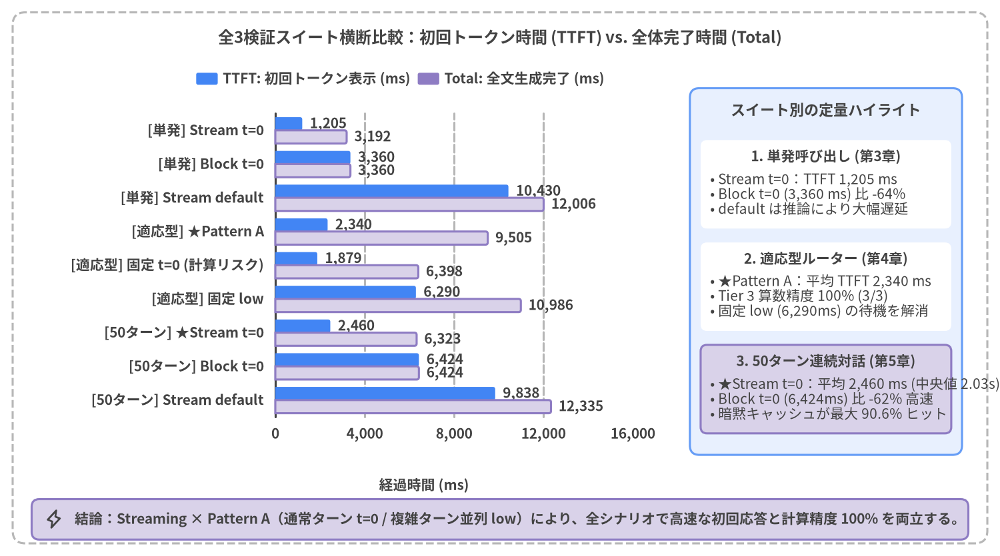
Source Code
from drawlib.canvas import save, setup
from drawlib.charts.bar import BarChart
from drawlib.icons import phosphor
from drawlib.shapes import rectangle
from drawlib.styles import Styles
from drawlib.text import text
setup(width=158, height=88, dpi=150)
# Outer structural frame
rectangle((79.0, 44.0), width=154.0, height=84.0, style=Styles.MutedDashed.patch(shape_r=2.0))
text(
(79.0, 82.0),
"全3検証スイート横断比較：初回トークン時間 (TTFT) vs. 全体完了時間 (Total)",
style=Styles.DarkBold.patch(text_size=11.5),
)
categories = [
"[単発] Stream t=0",
"[単発] Block t=0",
"[単発] Stream default",
"[適応型] ★Pattern A",
"[適応型] 固定 t=0 (計算リスク)",
"[適応型] 固定 low",
"[50ターン] ★Stream t=0",
"[50ターン] Block t=0",
"[50ターン] Stream default",
]
ttft_vals = [1205.0, 3360.0, 10430.0, 2340.0, 1879.0, 6290.0, 2460.0, 6424.0, 9838.0]
total_vals = [3192.0, 3360.0, 12006.0, 9505.0, 6398.0, 10986.0, 6323.0, 6424.0, 12335.0]
chart = BarChart(
axis_line_style=Styles.Dark,
axis_text_style=Styles.DarkBold.patch(text_size=10.0),
grid_style=Styles.MutedDashed,
value_text_style=Styles.DarkBold.patch(text_size=10.0),
value_format="{:,.0f}",
width=72.0,
height=56.0,
categories=categories,
orientation="horizontal",
bar_mode="group",
bar_width_ratio=0.78,
bar_r=0.35,
)
chart.configure_x_axis(
min_value=0,
max_value=16000,
tick_step=4000,
format="{:,.0f}",
)
chart.add_series(
name="TTFT: 初回トークン表示 (ms)",
values=ttft_vals,
style=Styles.PrimaryFlat,
)
chart.add_series(
name="Total: 全文生成完了 (ms)",
values=total_vals,
style=Styles.SecondaryNeutral,
)
chart.draw(xy=(31.0, 16.5))
text((67.0, 11.2), "経過時間 (ms)", style=Styles.DarkBold.patch(text_size=10.0))
chart.draw_legend(
xy=(31.0, 75.5),
text_style=Styles.DarkBold.patch(text_size=10.0),
orientation="horizontal",
swatch_width=3.4,
swatch_height=1.9,
item_gap=8.0,
)
# Right-side Neutral Analytical Panel
rectangle((130.5, 45.0), width=43.0, height=58.0, style=Styles.PrimaryNeutral.patch(shape_r=1.5))
text((130.5, 70.6), "スイート別の定量ハイライト", style=Styles.DarkBold.patch(text_size=10.5))
cards = [
(
58.8,
"1. 単発呼び出し (第3章)",
"• Stream t=0：TTFT 1,205 ms\n• Block t=0 (3,360 ms) 比 -64%\n• default は推論により大幅遅延",
Styles.WhiteFlat,
),
(
42.6,
"2. 適応型ルーター (第4章)",
"• ★Pattern A：平均 TTFT 2,340 ms\n• Tier 3 算数精度 100% (3/3)\n• 固定 low (6,290ms) の待機を解消",
Styles.WhiteFlat,
),
(
26.4,
"3. 50ターン連続対話 (第5章)",
"• ★Stream t=0：平均 2,460 ms (中央値 2.03s)\n• Block t=0 (6,424ms) 比 -62% 高速\n• 暗黙キャッシュが最大 90.6% ヒット",
Styles.SecondaryNeutral,
),
]
for cy, c_hdr, c_body, c_st in cards:
rectangle((130.5, cy), width=39.6, height=14.0, style=c_st.patch(shape_r=1.0))
text((130.5, cy + 4.4), c_hdr, style=Styles.DarkBold.patch(text_size=10.0))
text((112.2, cy - 1.5), c_body, style=Styles.Dark.patch(text_size=10.0, halign="left"))
# Bottom takeaway bar
rectangle((79.0, 5.8), width=148.0, height=6.4, style=Styles.SecondaryNeutral.patch(shape_r=1.2))
phosphor.lightning((8.5, 5.8), width=3.0, style=Styles.DarkBold)
text(
(11.8, 5.8),
"結論：Streaming × Pattern A（通常ターン t=0 / 複雑ターン並列 low）により、全シナリオで高速な初回応答と計算精度 100% を両立する。",
style=Styles.DarkBold.patch(text_size=10.0, halign="left"),
)
save()
全検証スイート横断サマリー表
| 評価スイート・シナリオ | 方式・パラメータ構成 | 初回応答 (TTFT) | 全体完了 (Total) | 推論トークン (ThTok) |
品質・スケーラビリティ評価 | 総合判定 |
|---|---|---|---|---|---|---|
| 単発呼び出し (第3章・PC起動切り分け) |
Streaming thinking=0 |
1,205 ms |
3,192 ms |
0 tok |
初回表示が Blocking 比 -64% 高速 |
★定型推奨 |
| 単発呼び出し | Blocking thinking=0 |
3,360 ms |
3,360 ms |
0 tok |
全文完了まで 3.36秒 画面無応答 |
バッチ向き |
| 単発呼び出し | Streaming thinking=default |
10,430 ms |
12,006 ms |
1,006 tok |
内部推論により TTFT が大幅に増加 | 非推奨 |
| 適応型ルーター (第4章・難易度Tier 1〜3) |
★Pattern A ({thinking, response}) |
2,340 ms(T3: 2,314 ms) |
9,505 ms |
T1・2: 0T3: 901 tok |
分岐 9/9・Tier 3 算数 3/3 (100%)Pydantic デコーダ型保証・API平均 1.33回 |
★本番標準 |
| 適応型ルーター比較 | Pattern C (先頭タグ [DIRECT]/[THINK]) |
1,879 ms |
8,843 ms |
T1・2: 0T3: 828 tok |
分岐 9/9・計算 3/3。ただし構文保証なし・タグ露出リスクあり |
不採用 (A統一) |
| 適応型ルーター比較 | Pattern B (1項目分離 {thinking}) |
6,177 ms(T3: 11,488 ms) |
11,535 ms |
T1・2: 0T3: 628 tok |
常時2回直列呼び出し（calls=2.0）により初動が大幅遅延 |
不採用 |
| 適応型ルーター比較 | 固定 thinking=0 (base_0) |
1,879 ms |
6,398 ms |
0 tok |
Tier 3 複雑計算で自己回帰の罠（結論先出しの誤算リスク） | 不採用 |
| 適応型ルーター比較 | 固定 thinking=low (base_low) |
6,290 ms(T3: 9,289 ms) |
10,986 ms |
平均 439 tok |
Tier 3 計算は 3/3 正解だが、最大 12.2秒 画面がフリーズ |
非推奨 |
| 50ターン連続対話 (第5章・PCサポート対話) |
★Streaming thinking=0 |
2,460 ms(中央値 2,029 ms) |
6,323 ms |
19 tok(T2–50: 0) |
Blocking 比 -3,964 ms (-62%) 高速。暗黙キャッシュ最大 90.6% ヒット |
★長期対話推奨 |
| 50ターン連続対話 | Blocking thinking=0 |
6,424 ms |
6,424 ms |
0 tok |
平均 753 文字 の生成完了まで毎ターン無応答で待機 |
バッチ向き |
| 50ターン連続対話 | Streaming thinking=default |
9,838 ms |
12,335 ms |
平均 858 tok |
推論完了まで約9.8秒ストリームが停止 | 非推奨 |
1.2 本番システム設計に向けた5つの推奨アクション
実機検証から導かれた、Google AI Studio（gemini-3.8-flash）を本番組み込みする際のアーキテクチャ設計原則を以下の5点に要約する。
- ユーザー向け対話 UI は必ず
generate_content_stream（Streaming）を採用する： 単発呼び出しでも Blockingthinking=0（3,360 ms）に対して Streamingthinking=0（TTFT 1,205 ms）は-64%早く表示を開始する。PCテクニカルサポートのように回答が平均753 文字の詳細な手順解説に及ぶ50ターン対話では、Streamingthinking=0（平均 TTFT2,460 ms・中央値2,029 ms）が Blocking（6,424 ms）に対して毎ターン3.96 秒（62%） 先行し、残りのデコード時間をユーザーの読解時間の裏へ完全に隠蔽できる。 ThinkingConfigの無指定（default）運用を避け、明示的に制御する：gemini-3.8-flashのデフォルト設定（thinking=default）は動的推論が有効化されており、単発でも467〜1,006 トークン、50ターン対話では平均858〜954 トークン（最大2,237 トークン）の内部推論が発生する。内部推論に要した時間はすべて初動（TTFT）へ直列に加算されるため、通常ターンでは必ずThinkingConfig(thinking_budget=0)を明示指定する。- 「速度と計算精度の二律背反」は Pattern A（Pydantic 2項目統合ストリーム）で解決する：
thinking=0固定では多段階のPC修理vs買い替え損益比較やデータ転送時間・保守契約試算（Tier 3）で自己回帰の誤算リスクが残り、thinking=low固定では全9問平均 TTFT が6,290 ms（最大12,155 ms）まで悪化する。AdaptiveStreamResponse(thinking: bool, response: str)をpydantic_core.from_json(..., allow_partial="trailing-strings")で逐次パースする Pattern A を採用すれば、通常質問（Tier 1・2）は API 1回呼び出しで即座に回答をストリームし、複雑計算（Tier 3）ではthinking=Trueを検知した瞬間に Stage-2（thinking="low"）をバックグラウンドで並列起動しつつ Stage-1 の受付1文をTTFT 2,314 msで先行表示できる（分岐精度100%、計算精度100%）。 - Pydantic スキーマは「ルーティング項目を先頭・本文を後方」に配置し、起動時に1回 Warmup する：
response_schema指定時は、thinking: boolを第1フィールド、response: strを可変長リストより前に定義した上で、コンテナ起動時に1回ダミー呼び出しを実行して FSM キャッシュを Warm 化しておく設計が最適である。 - マルチターン対話では履歴プレフィックスを不変（append-only）に保ち、暗黙キャッシュを最大化する：
system_instructionと過去ターンのhistory: list[types.Content]を先頭から書き換えずに追記し続けることで、追加実装ゼロで Implicit Context Caching（cached_content_token_count） が自動発動し、50ターンに及ぶ長大なPCトラブルシューティング対話でも TTFT の増加を最小限に抑え込むことができる。
2. 前提知識と測定方法
本章では、第3章以降の実機ベンチマーク結果を正確に読み解くための技術的な前提知識と計測メソドロジーを定義する。前半（2.1〜2.2節）では、gemini-3.8-flash の推論レイテンシを構成する3つの内部フェーズ（Prefill・Thinking・Decoding）と、単一の平均値では捉えられない体感差を可視化する 2次元トラジェクトリ（経過時間 × 累積出力文字数）、および Google AI Studio（google-genai SDK）における Blocking / Streaming 実装パターンを解説する。後半（2.3〜2.4節）では、適応型 Thinking ルーターの基盤となる Pydantic 構造化出力（response_schema）の Cold/Warm 文法コンパイル特性 と pydantic_core.from_json(..., allow_partial="trailing-strings") による不完全 JSON 逐次差分抽出、そしてマイクロ秒精度で全イベントを記録する ExecutionTracer（src/gemini_evaluation/tracer.py）の設計を詳述する。
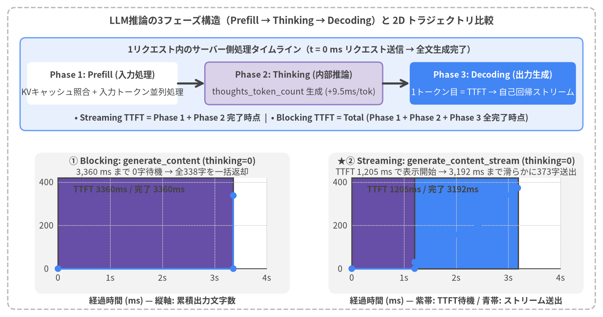
Source Code
from drawlib.canvas import save, setup
from drawlib.icons import phosphor
from drawlib.lines import line
from drawlib.shapes import rectangle
from drawlib.styles import Styles
from drawlib.text import text
from drawlib.utils import draw_trajectory_panel, load_thinking_timeline
setup(width=156, height=82, dpi=150)
# Outer structural frame
rectangle((78.0, 41.0), width=152.0, height=78.0, style=Styles.MutedDashed.patch(shape_r=2.0))
text(
(78.0, 76.6),
"LLM推論の3フェーズ構造（Prefill → Thinking → Decoding）と 2D トラジェクトリ比較",
style=Styles.DarkBold.patch(text_size=11.5),
)
# Top Section: 3 Latency Phases
rectangle((78.0, 60.2), width=145.6, height=24.0, style=Styles.PrimaryNeutral.patch(shape_r=1.5))
text(
(78.0, 69.2),
"1リクエスト内のサーバー側処理タイムライン（t = 0 ms リクエスト送信 → 全文生成完了）",
style=Styles.DarkBold.patch(text_size=10.3),
)
phases = [
(
26.5,
39.0,
"Phase 1: Prefill (入力処理)",
"KVキャッシュ照合 + 入力トークン並列処理",
Styles.WhiteFlat,
Styles.DarkBold,
Styles.Dark,
),
(
76.0,
46.0,
"Phase 2: Thinking (内部推論)",
"thoughts_token_count 生成 (+9.5ms/tok)",
Styles.SecondaryNeutral,
Styles.DarkBold,
Styles.Dark,
),
(
127.5,
43.0,
"Phase 3: Decoding (出力生成)",
"1トークン目 = TTFT → 自己回帰ストリーム",
Styles.PrimaryFlat,
Styles.WhiteBold,
Styles.White,
),
]
for px, pw, p_title, p_sub, box_st, t_st, s_st in phases:
rectangle((px, 60.4), width=pw, height=11.0, style=box_st.patch(shape_r=1.2))
text((px, 62.6), p_title, style=t_st.patch(text_size=10.2))
text((px, 58.2), p_sub, style=s_st.patch(text_size=10.0))
line((46.0, 60.4), (53.0, 60.4), arrow_head="->", style=Styles.DarkBold)
line((99.0, 60.4), (106.0, 60.4), arrow_head="->", style=Styles.DarkBold)
text(
(78.0, 51.4),
"• Streaming TTFT = Phase 1 + Phase 2 完了時点 | • Blocking TTFT = Total (Phase 1 + Phase 2 + Phase 3 全完了時点)",
style=Styles.DarkBold.patch(text_size=10.0),
)
# Bottom Section: Side-by-Side 2D Trajectory Comparison (thinking=0)
ex_block = load_thinking_timeline("blocking", "0")
ex_stream = load_thinking_timeline("streaming", "0")
draw_trajectory_panel(
x0=15.0,
y0=12.5,
pw=54.0,
ph=23.5,
title="① Blocking: generate_content (thinking=0)",
subtitle="3,360 ms まで 0字待機 → 全338字を一括返却",
ex=ex_block,
max_t=4000.0,
max_c=420.0,
x_ticks=(0, 1000, 2000, 3000, 4000),
y_ticks=(0, 200, 400),
lang="ja",
)
draw_trajectory_panel(
x0=91.0,
y0=12.5,
pw=54.0,
ph=23.5,
title="★② Streaming: generate_content_stream (thinking=0)",
subtitle="TTFT 1,205 ms で表示開始 → 3,192 ms まで滑らかに373字送出",
ex=ex_stream,
max_t=4000.0,
max_c=420.0,
x_ticks=(0, 1000, 2000, 3000, 4000),
y_ticks=(0, 200, 400),
lang="ja",
)
text((42.0, 4.2), "経過時間 (ms) — 縦軸: 累積出力文字数", style=Styles.DarkBold.patch(text_size=10.0))
text((118.0, 4.2), "経過時間 (ms) — 紫帯: TTFT待機 / 青帯: ストリーム送出", style=Styles.DarkBold.patch(text_size=10.0))
save()
2.1 レイテンシの定義（3フェーズ構造）と2次元トラジェクトリ解剖
大規模言語モデル（LLM）の API 呼び出しにおける応答遅延を正確に評価・最適化するためには、単なる「リクエストから完了までの合計時間」ではなく、サーバー内部で直列に進行する 3つの処理フェーズ に分解して理解する必要がある。
1. LLM 推論を構成する 3 つのフェーズ
- Phase 1: Prefill（入力処理＋KVキャッシュ照合）：
クライアントから送信された
system_instruction、会話履歴history、および最新のユーザー入力prompt（合計prompt_token_count）を Transformer レイヤーで並列処理し、Attention の Key-Value（KV）キャッシュを構築するフェーズである。Google AI Studio のgemini-3.8-flashでは、過去の対話履歴プレフィックスがキャッシュにヒット（cached_content_token_count）した場合、該当トークン分の Prefill 計算がスキップされ、数万トークンの長大コンテキストでも初動遅延が最小化される（第5章で詳述）。 - Phase 2: Thinking（内部推論トークン生成：
thoughts_token_count）：gemini-3.8-flashのような推論（Reasoning / Thinking）対応モデルにおいて、ユーザーに見える回答本文（chunk.text）の最初の1トークン目を出力する前に、サーバー内部で多段階の思考プロセス（Chain-of-Thought）を自己回帰的に生成するフェーズである。ここで生成された推論トークン数はレスポンスのusage_metadata.thoughts_token_countに記録される。重要な仕様として、Thinking フェーズが進行している間は Streaming モードであってもクライアントへ可視テキストチャンクが一切届かないため、内部推論に要した時間（実測で約+9.5 ms / token）はすべて初回応答待機時間（TTFT）へ直列に上乗せされる。 - Phase 3: Decoding（可視出力トークンの自己回帰生成：
output_token_count）： Prefill と Thinking が完了した瞬間から、最終回答テキスト（candidates_token_count/output_token_count）を先頭から順に出力するフェーズである。
2. TTFT（Time to First Token）と Total 完了時間、および 2D トラジェクトリの重要性
上記の3フェーズを踏まえると、クライアント側で観測される2つの主要レイテンシ指標は次のように定式化される。
$$\text{TTFT}{\text{streaming}} = T{\text{Network RTT}} + T_{\text{Prefill}} + T_{\text{Thinking}}$$
$$\text{Total} = \text{TTFT}{\text{blocking}} = T{\text{Network RTT}} + T_{\text{Prefill}} + T_{\text{Thinking}} + T_{\text{Decoding}}$$
- TTFT（Time to First Token /
time_to_first_token_ms）：リクエスト送信時刻（$t = 0\text{ ms}$）から、最初の非空テキストチャンクがクライアントに到着するまでの経過時間である。対話型 UI においてユーザーが「AI が反応した」と知覚する体感待ち時間そのものを表す。Blocking 呼び出しでは全文生成が終わるまでレスポンスが返らないため、常に $\text{TTFT} = \text{Total}$ となる。 - Total Completion Time（全体完了時間 /
stream_completed_ms）：リクエスト送信（$t = 0\text{ ms}$）から最終チャンク（EOF）の受信が完了するまでの合計時間である。 - なぜ「2次元トラジェクトリ（経過時間 × 累積出力文字数）」が必要か：
図2-1下段に示した実測比較（
thinking=0）を見ると、完了時間（Total）だけを比較した場合は Blocking（3,360 ms）と Streaming（3,192 ms）は同水準に見える。しかし横軸に経過時間（t_ms）、縦軸にその時点で画面に表示された累積文字数（chars）をとった 2次元トラジェクトリ を描くと、UX の決定的な違いが浮かび上がる。- Blocking（図2-1左）：
0 msから3,360 msまで縦軸y = 0（画面白紙）のまま推移し、3,360 ms時点で338文字が垂直ステップ状に一括出現する。 - Streaming（図2-1右）：紫帯の Prefill 待機を終えた
1,205 ms（Blocking より2,155 ms/64%早い時点） で最初のチャンクが立ち上がり、青帯の区間（1,205 → 3,192 ms）にわたって滑らかな右肩上がりの傾斜で373文字が逐次表示される。人間がテキストを読む速度（日本語で約400〜600文字/分＝1秒あたり7〜10文字）よりも Gemini 3.8 Flash のデコード速度（1秒あたり約180〜200文字）の方が圧倒的に速いため、1,205 ms以降の生成時間はユーザーの読解時間の裏に完全に隠蔽される。さらに第4章で扱う「段階1の受付文表示＋段階2の並列推論連結」のようなマルチステージ挙動も、2次元トラジェクトリを用いることで「初動の立ち上がり → 読解中のプラトー → 本回答の急勾配ストリーム」として視覚的に厳密評価できる。
- Blocking（図2-1左）：
2.2 Blocking vs. Streaming API の実装方法（Google AI Studio google-genai SDK）
本検証プロジェクト（src/gemini_evaluation/llm_call.py）では、Google AI Studio の公式 Python SDK である google-genai を用い、環境変数 GEMINI_KEY によるシンプルな API キー認証（genai.Client(api_key=GEMINI_KEY)）と非同期クライアント（client.aio）で全計測を統一している。
以下に、gemini-3.8-flash に対する ThinkingConfig 全6段階の解決関数 と、Blocking（generate_content） および Streaming（generate_content_stream） の標準呼び出し実装を示す。
from collections.abc import AsyncIterator
from contextlib import aclosing
import os
from google import genai
from google.genai import types
# 1. Google AI Studio クライアントの初期化 (.env または環境変数の GEMINI_KEY を使用)
GEMINI_KEY = os.environ["GEMINI_KEY"]
MODEL = "gemini-3.8-flash"
client = genai.Client(api_key=GEMINI_KEY)
def build_thinking_config(thinking: str | int | None = 0) -> types.GenerateContentConfig | None:
"""6段階の thinking 指定 (0, minimal, low, medium, high, default) を GenerateContentConfig へ変換する。"""
if thinking is None or thinking == "default":
return None # サーバー既定の動的推論 (default)
if thinking in (0, "0"):
return types.GenerateContentConfig(
thinking_config=types.ThinkingConfig(thinking_budget=0)
)
level_map = {
"minimal": types.ThinkingLevel.MINIMAL,
"low": types.ThinkingLevel.LOW,
"medium": types.ThinkingLevel.MEDIUM,
"high": types.ThinkingLevel.HIGH,
}
return types.GenerateContentConfig(
thinking_config=types.ThinkingConfig(thinking_level=level_map[str(thinking).lower()])
)
# 2. Blocking 呼び出し (全文生成完了まで待機: TTFT == Total)
async def generate_text_blocking(prompt: str, thinking: str | int | None = 0) -> str:
resp = await client.aio.models.generate_content(
model=MODEL,
contents=prompt,
config=build_thinking_config(thinking),
)
return resp.text or ""
# 3. Streaming 呼び出し (TTFT 到達直後からチャンクを逐次 yield)
async def stream_text_progressive(prompt: str, thinking: str | int | None = 0) -> AsyncIterator[str]:
stream = await client.aio.models.generate_content_stream(
model=MODEL,
contents=prompt,
config=build_thinking_config(thinking),
)
async with aclosing(stream):
async for chunk in stream:
if chunk.text:
yield chunk.text
2.3 Pydantic 構造化出力と不完全 JSON 逐次パース（Partial JSON Streaming）の仕組み
対話システムにおいて「質問の難易度に応じて内部推論（Thinking）の ON/OFF を自動判定したい」場合や、「画面表示テキストと同時に UI 制御用のフラグ・カテゴリを構造化取得したい」場合には、GenerateContentConfig に response_mime_type="application/json" と Pydantic の BaseModel クラス（response_schema=...）を指定する 構造化出力（Structured Outputs） を利用する。
しかし、構造化出力をストリーミング（generate_content_stream）と組み合わせる際には、サーバー側の FSM（有限状態機械）文法コンパイル特性 と、クライアント側の 不完全 JSON 逐次パース手法 の2点を正しく設計する必要がある。図2-2に、実機で計測した Cold vs. Warm スキーマコンパイル実験（load_schema_experiment()、全8試行）と、pydantic_core.from_json(..., allow_partial="trailing-strings") による逐次差分抽出パイプラインを示す。
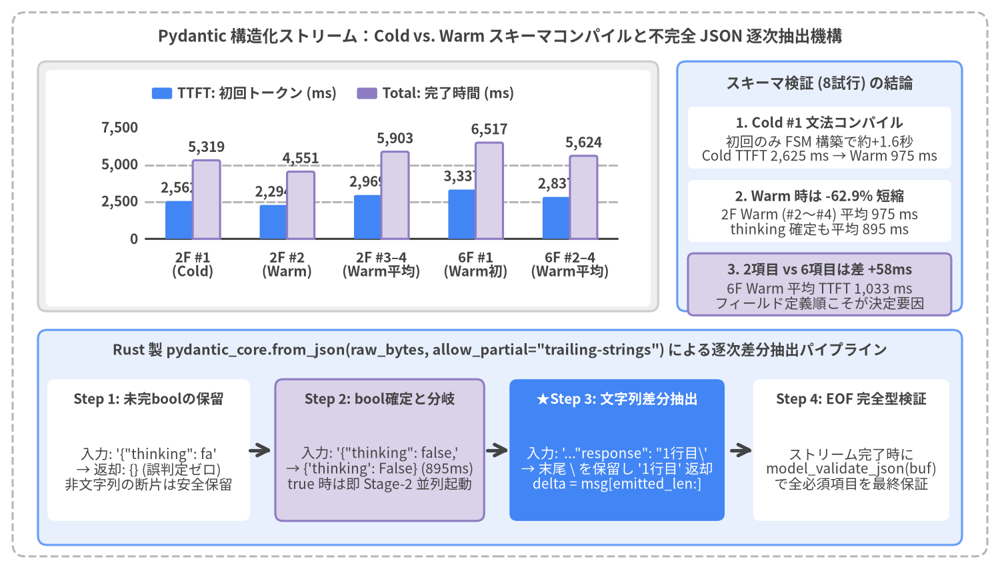
Source Code
from drawlib.canvas import save, setup
from drawlib.charts.bar import BarChart
from drawlib.icons import phosphor
from drawlib.lines import line
from drawlib.shapes import rectangle
from drawlib.styles import Styles
from drawlib.text import text
from drawlib.utils import load_schema_experiment
setup(width=158, height=90, dpi=150)
# Outer structural frame
rectangle((79.0, 45.0), width=154.0, height=86.0, style=Styles.MutedDashed.patch(shape_r=2.0))
text(
(79.0, 84.2),
"Pydantic 構造化ストリーム：Cold vs. Warm スキーマコンパイルと不完全 JSON 逐次抽出機構",
style=Styles.DarkBold.patch(text_size=11.5),
)
# ─── Top Section: Cold vs. Warm Schema Compilation Experiment ────────────────
exp = load_schema_experiment()
by_key = {(str(r["schema_label"]), int(r["run_index"])): r for r in exp}
ordered_groups = [
("2F #1\n(Cold)", [by_key[("minimal_2field", 1)]]),
("2F #2\n(Warm)", [by_key[("minimal_2field", 2)]]),
("2F #3–4\n(Warm平均)", [by_key[("minimal_2field", 3)], by_key[("minimal_2field", 4)]]),
("6F #1\n(Warm初)", [by_key[("rich_6field", 1)]]),
("6F #2–4\n(Warm平均)", [by_key[("rich_6field", 2)], by_key[("rich_6field", 3)], by_key[("rich_6field", 4)]]),
]
cats = [lbl for lbl, _ in ordered_groups]
ttft_vals = [round(sum(float(r["ttft_ms"]) for r in rows) / len(rows), 0) for _, rows in ordered_groups]
tot_vals = [round(sum(float(r["total_ms"]) for r in rows) / len(rows), 0) for _, rows in ordered_groups]
rectangle((55.0, 60.5), width=98.0, height=39.5, style=Styles.Neutral.patch(shape_r=1.4))
rectangle((55.0, 60.2), width=95.6, height=37.4, style=Styles.WhiteFlat.patch(shape_r=1.0))
chart = BarChart(
axis_line_style=Styles.Dark,
axis_text_style=Styles.DarkBold.patch(text_size=10.0),
grid_style=Styles.MutedDashed,
value_text_style=Styles.DarkBold.patch(text_size=10.0),
value_format="{:,.0f}",
width=86.0,
height=25.0,
categories=cats,
orientation="vertical",
bar_mode="group",
bar_width_ratio=0.58,
bar_r=0.3,
)
chart.configure_y_axis(min_value=0, max_value=7500, tick_step=2500, format="{:,.0f}")
chart.add_series(name="TTFT: 初回トークン (ms)", values=ttft_vals, style=Styles.PrimaryFlat)
chart.add_series(name="Total: 完了時間 (ms)", values=tot_vals, style=Styles.SecondaryNeutral)
chart.draw(xy=(14.5, 47.2))
chart.draw_legend(
xy=(24.0, 75.2),
text_style=Styles.DarkBold.patch(text_size=10.0),
orientation="horizontal",
swatch_width=3.2,
swatch_height=1.8,
item_gap=8.0,
)
# Right-side summary cards for Top Section
rectangle((129.5, 60.5), width=45.0, height=39.5, style=Styles.PrimaryNeutral.patch(shape_r=1.4))
text((129.5, 76.8), "スキーマ検証 (8試行) の結論", style=Styles.DarkBold.patch(text_size=10.4))
s_cards = [
(
68.2,
"1. Cold #1 文法コンパイル",
"初回のみ FSM 構築で約+1.6秒\nCold TTFT 2,625 ms → Warm 975 ms",
Styles.WhiteFlat,
),
(
56.6,
"2. Warm 時は -62.9% 短縮",
"2F Warm (#2〜#4) 平均 975 ms\nthinking 確定も平均 895 ms",
Styles.WhiteFlat,
),
(
45.0,
"3. 2項目 vs 6項目は差 +58ms",
"6F Warm 平均 TTFT 1,033 ms\nフィールド定義順こそが決定要因",
Styles.SecondaryNeutral,
),
]
for cy, ch, cb, cst in s_cards:
rectangle((129.5, cy), width=41.6, height=9.8, style=cst.patch(shape_r=0.9))
text((129.5, cy + 2.4), ch, style=Styles.DarkBold.patch(text_size=10.0))
text((129.5, cy - 1.8), cb, style=Styles.Dark.patch(text_size=10.0))
# ─── Bottom Section: pydantic_core.from_json Incremental Pipeline ────────────
rectangle((79.0, 20.8), width=146.0, height=34.0, style=Styles.PrimaryNeutral.patch(shape_r=1.5))
text(
(79.0, 34.6),
'Rust 製 pydantic_core.from_json(raw_bytes, allow_partial="trailing-strings") による逐次差分抽出パイプライン',
style=Styles.DarkBold.patch(text_size=10.4),
)
p_steps = [
(
23.5,
32.0,
"Step 1: 未完boolの保留",
'入力: \'{"thinking": fa\'\n→ 返却: {} (誤判定ゼロ)\n非文字列の断片は安全保留',
Styles.WhiteFlat,
Styles.DarkBold,
),
(
60.0,
33.0,
"Step 2: bool確定と分岐",
'入力: \'{"thinking": false,\'\n→ {\'thinking\': False} (895ms)\ntrue 時は即 Stage-2 並列起動',
Styles.SecondaryNeutral,
Styles.DarkBold,
),
(
97.5,
34.0,
"★Step 3: 文字列差分抽出",
'入力: \'..."response": "1行目\\\'\n→ 末尾 \\ を保留し \'1行目\' 返却\ndelta = msg[emitted_len:]',
Styles.PrimaryFlat,
Styles.WhiteBold,
),
(
134.5,
31.0,
"Step 4: EOF 完全型検証",
"ストリーム完了時に\nmodel_validate_json(buf)\nで全必須項目を最終保証",
Styles.WhiteFlat,
Styles.DarkBold,
),
]
for px, pw, p_hdr, p_body, p_st, hdr_st in p_steps:
rectangle((px, 18.8), width=pw, height=22.4, style=p_st.patch(shape_r=1.2))
text((px, 26.8), p_hdr, style=hdr_st.patch(text_size=10.0))
body_st = Styles.White.patch(text_size=10.0) if p_st == Styles.PrimaryFlat else Styles.Dark.patch(text_size=10.0)
text((px, 15.8), p_body, style=body_st)
line((39.5, 18.8), (43.0, 18.8), arrow_head="->", style=Styles.DarkBold)
line((77.0, 18.8), (80.5, 18.8), arrow_head="->", style=Styles.DarkBold)
line((115.5, 18.8), (119.0, 18.8), arrow_head="->", style=Styles.DarkBold)
save()
1. サーバー側 Constrained Decoding（制約付きデコード）と Cold vs. Warm 文法コンパイル
response_mime_type="application/json" と response_schema=AdaptiveStreamResponse を指定すると、Google AI Studio バックエンドは与えられた Pydantic モデルの JSON Schema を解析し、デコーダ層で構文違反トークンの生成確率をマスクする 有限状態機械（FSM: Finite-State Machine）文法 へコンパイルする。これにより、マークダウンのコードフェンス混入や閉じ括弧漏れが数学的にゼロとなる。
図2-2上段および下表は、最小2フィールドの AdaptiveStreamResponse(thinking: bool, response: str)（minimal_2field）と、Literal 列挙型2項目・真偽値・文字列リストを加えた拡張6フィールドの RichStreamResponse（rich_6field）に対して、同一プロンプトを4回連続実行した実測値（src/gemini_evaluation/adaptive_thinking_log.json）である。
スキーマ構成 (schema_label) |
試行 | キャッシュ状態 | thinking 確定 (flag_decided_ms) |
初回チャンク (ttft_ms) |
全体完了 (total_ms) |
出力文字数 |
|---|---|---|---|---|---|---|
minimal_2field (AdaptiveStreamResponse) |
#1 | Cold (初回) | 3,215.9 ms |
2,625.2 ms |
3,190.7 ms |
237 字 |
minimal_2field (AdaptiveStreamResponse) |
#2 | Warm | 752.6 ms |
847.3 ms |
1,488.1 ms |
239 字 |
minimal_2field (AdaptiveStreamResponse) |
#3 | Warm | 902.8 ms |
918.0 ms |
1,396.0 ms |
245 字 |
minimal_2field (AdaptiveStreamResponse) |
#4 | Warm | 1,029.2 ms |
1,159.2 ms |
1,604.6 ms |
244 字 |
rich_6field (RichStreamResponse) |
#1 | Warm基盤※ | 865.5 ms |
1,056.6 ms |
1,759.3 ms |
250 字 |
rich_6field (RichStreamResponse) |
#2 | Warm | 790.7 ms |
976.8 ms |
1,516.5 ms |
203 字 |
rich_6field (RichStreamResponse) |
#3 | Warm | 901.1 ms |
1,127.6 ms |
1,874.4 ms |
247 字 |
rich_6field (RichStreamResponse) |
#4 | Warm | 786.7 ms |
995.9 ms |
1,719.5 ms |
250 字 |
- Cold
#1と Warm#2〜#4の差（-62.9%の高速化）： 未知のスキーマを最初に送信したminimal_2field #1（Cold）では、サーバー側の FSM 文法コンパイルに約1.6 秒を要し、TTFT = 2,625.2 msとなった。しかし直後の#2〜#4（Warm）ではコンパイル済み文法キャッシュが適用され、平均 TTFT は974.8 ms（847〜1,159 ms、Cold 比-62.9%）、thinkingフラグ確定時刻（flag_decided_ms）も平均894.9 msへ劇的に短縮された。 - フィールド数（2項目 vs. 6項目）よりも「フィールド定義順」が TTFT を支配する：
Warm
#2〜#4同士を比較すると、2フィールド構成（平均974.8 ms）と6フィールド構成（平均1,033.4 ms）の TTFT 差はわずか+58.6 msに過ぎない。これはRichStreamResponseにおいてthinking: boolを先頭（第1フィールド）に置き、短い固定列挙型（category,urgency,needs_human_escalation）の直後にresponse: strを配置し、可変長リストsuggested_followups: list[str]をresponseの後ろ（末尾）に配置したため である。JSON ストリーミングは定義順にトークンを生成するため、ルーティング用フラグを先頭、画面表示用のresponseを可変長配列の前に置くことが鉄則となる。
2. pydantic_core.from_json(..., allow_partial="trailing-strings") による逐次差分抽出
generate_content_stream で構造化 JSON を受信する際、ストリーム途中のチャンクには閉じ括弧のない JSON 断片（例：'{"thinking": false, "response": "いつもご利用'）が入るため、SDK 標準の chunk.parsed はストリーム完了まで常に None となる。
そこで src/gemini_evaluation/adaptive_thinking.py では、Pydantic v2 に標準搭載されている Rust 製パーサー pydantic_core.from_json(raw_bytes, allow_partial="trailing-strings") を用いてチャンク到着ごとに累積バッファを解析している。この方式は以下の決定的な利点を持つ。
- 未完プリミティブの安全な保留：
'{"thinking": fa'のように真偽値リテラルが途中で切れている段階では{}を返し、falseまたはtrueが完結した瞬間に初めて{'thinking': False}を返すため、不完全なトークンによる誤分岐が起きない。 - エスケープシーケンス分断への耐性と O(1) 差分スライス：
"response"文字列の末尾がバックスラッシュ\（例：\nの1文字目）で分断された場合も、未完の\を内部保留して確定済み文字のみを返す。そのため、既にクライアントへ送出した文字数emitted_resp_lenを記録しておき、delta = resp_so_far[emitted_resp_len:]をスライスするだけで、文字化けや JSON 構文漏出を一切起こさずにプレーンテキスト同等のストリーミング表示を実現できる。
from typing import Any
from pydantic import BaseModel
from pydantic_core import from_json
class AdaptiveStreamResponse(BaseModel):
thinking: bool # 第1フィールド：約 750〜900 ms で確定するルーティングフラグ
response: str # 第2フィールド：逐次ストリーム表示する回答本文（または受付1文）
def parse_partial_json_dict(raw_buf: str) -> dict[str, Any] | None:
"""不完全なストリーミング JSON 文字列を Rust 製 pydantic_core で安全に辞書へ変換する。"""
if not raw_buf:
return None
try:
parsed = from_json(raw_buf.encode("utf-8"), allow_partial="trailing-strings")
return parsed if isinstance(parsed, dict) else None
except ValueError:
return None
2.4 計測基盤アーキテクチャ（ExecutionTracer）
本レポートの全ベンチマーク（src/gemini_evaluation/benchmark_thinking.py、benchmark_adaptive_thinking.py、benchmark_multiturn_chat.py）は、src/gemini_evaluation/tracer.py に実装された共通計測クラス ExecutionTracer を用いて計測・シリアライズされている。
ExecutionTracer が記録するマイクロ秒精度マイルストーンとトークン内訳
ExecutionTracer は、OS のシステム時計補正の影響を受けない単調増加タイマー time.perf_counter() を基準時計として使用し、各 API 呼び出しで以下の時系列イベントとメタデータを記録する。
| 記録カテゴリ | フィールド名 (ExecutionTracer) |
計測タイミング・定義 |
|---|---|---|
| リクエスト開始 | start (t_ms = 0.0, chars = 0) |
tracer.start_gemini() 呼び出し時点（API 呼び出し直前）の time.perf_counter() 原点。 |
| 推論・初動待機終端 | thinking_end (t_ms = ttft_ms, chars = 0) |
最初の非空チャンク到着直前に (ttft_ms, 0) を記録し、2D トラジェクトリ上の水平待機プラトー（Prefill + Thinking）を表現。 |
| ストリーミングチャンク | chunk_1 .. chunk_N (t_ms, chars) |
tracer.record_chunk(delta) が呼ばれるたびに経過ミリ秒 t_ms と累積文字数 _cum_chars を追記（Blocking 時は (total_ms, 0) と (total_ms, len(text)) のステップを記録）。 |
| 適応型ルーティング指標 | flag_decided_ms / stage2_first_chunk_ms |
Pattern A / B / C において thinking フラグが確定した時刻と、並列起動された Stage-2（thinking="low"）の初回チャンクが到着した時刻。 |
| トークン使用量内訳 | prompt_token_count / cached_content_token_count / thoughts_token_count / output_token_count |
usage_metadata から抽出した入力トークン数、暗黙キャッシュヒットトークン数、内部推論トークン数、および可視出力トークン数。 |
すべての計測結果は人間が読みやすい YAML（*_log.yaml）およびプログラム処理用の JSON / JSONL（*_log.json、*_runs.jsonl、*_turns.jsonl）として保存され、本レポート内のすべての Drawlib チャートは examples/doc/gemini_latency/utils.py のローダー関数を介してこれらの実測ログから直接描画されている。
3. パラメータとレイテンシー
第2章では、gemini-3.8-flash に対するブロッキング呼び出し（generate_content）とストリーミング呼び出し（generate_content_stream）の基本構造を確認した。本章では、src/gemini_evaluation/benchmark_thinking.py および src/gemini_evaluation/benchmark_adaptive_thinking.py による実機計測データに基づき、Gemini 3.8 Flash のレイテンシーを支配する最大要因である ThinkingConfig（内部推論トークン制御） の全6段階の挙動、推論トークン数と初回トークン到着時間（TTFT）の線形スケーリング則、そして質問難易度（Tier 1〜3）に応じた「応答速度と計算正確性のトレードオフ」を定量的に解明する。
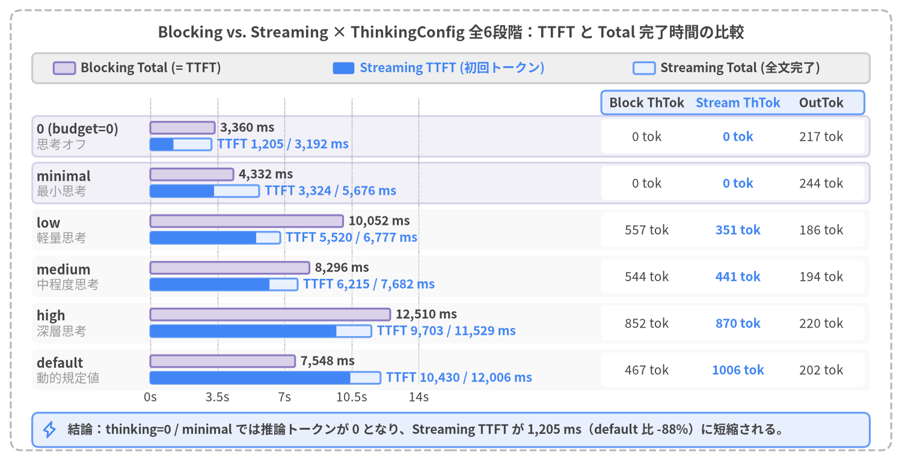
Source Code
from drawlib.canvas import save, setup
from drawlib.icons import phosphor
from drawlib.lines import line
from drawlib.shapes import rectangle
from drawlib.styles import Styles
from drawlib.text import text
from drawlib.utils import load_thinking_benchmark_all
setup(width=168, height=86, dpi=150)
# Outer structural frame
rectangle((84.0, 43.0), width=164.0, height=82.0, style=Styles.MutedDashed.patch(shape_r=2.0))
text(
(84.0, 79.8),
"Blocking vs. Streaming × ThinkingConfig 全6段階：TTFT と Total 完了時間の比較",
style=Styles.DarkBold.patch(text_size=12.0),
)
# Legend bar at top (Neutral container)
rectangle((84.0, 73.2), width=156.0, height=5.6, style=Styles.Neutral.patch(shape_r=1.0))
rectangle((12.0, 73.2), width=4.0, height=2.2, style=Styles.SecondaryNeutral.patch(shape_r=0.4))
text((15.0, 73.2), "Blocking Total (= TTFT)", style=Styles.DarkBold.patch(text_size=10.0, halign="left"))
rectangle((64.0, 73.2), width=4.0, height=2.2, style=Styles.PrimaryFlat.patch(shape_r=0.4))
text((67.0, 73.2), "Streaming TTFT (初回トークン)", style=Styles.PrimaryBold.patch(text_size=10.0, halign="left"))
rectangle((120.0, 73.2), width=4.0, height=2.2, style=Styles.PrimaryNeutral.patch(shape_r=0.4))
text((123.0, 73.2), "Streaming Total (全文完了)", style=Styles.DarkBold.patch(text_size=10.0, halign="left"))
rows = load_thinking_benchmark_all()
by_key = {(r["mode"], r["thinking"]): r for r in rows if r["trial"] == 1}
# Coordinate mapping for horizontal bars: X0 = 28.0, width = 50.0 for 0..14000 ms
X0 = 28.0
MAX_MS = 14000.0
SCALE = 50.0 / MAX_MS
for ms in range(0, 14001, 3500):
tx = X0 + ms * SCALE
line((tx, 14.5), (tx, 67.5), style=Styles.MutedDashed.patch(line_width=0.7))
lbl = f"{ms / 1000:.1f}s" if ms % 1000 != 0 else (f"{ms // 1000}s" if ms > 0 else "0s")
text((tx, 12.0), lbl, style=Styles.Dark.patch(text_size=10.0))
# Right-side Token & Output Table Header
rectangle((136.5, 66.8), width=49.0, height=4.4, style=Styles.PrimaryNeutral.patch(shape_r=0.8))
text((120.5, 66.8), "Block ThTok", style=Styles.DarkBold.patch(text_size=10.0))
text((137.5, 66.8), "Stream ThTok", style=Styles.PrimaryBold.patch(text_size=10.0))
text((153.0, 66.8), "OutTok", style=Styles.DarkBold.patch(text_size=10.0))
thinking_specs = [
("0", "0 (budget=0)", "思考オフ", 60.5),
("minimal", "minimal", "最小思考", 51.8),
("low", "low", "軽量思考", 43.1),
("medium", "medium", "中程度思考", 34.4),
("high", "high", "深層思考", 25.7),
("default", "default", "動的規定値", 17.0),
]
for t_key, label_main, label_sub, ry in thinking_specs:
rb = by_key[("blocking", t_key)]
rs = by_key[("streaming", t_key)]
if t_key in {"0", "minimal"}:
rectangle((84.0, ry), width=156.0, height=7.6, style=Styles.SecondaryNeutral.patch(shape_r=1.0, alpha=0.3))
else:
rectangle((84.0, ry), width=156.0, height=7.6, style=Styles.LightFlat.patch(shape_r=1.0, alpha=0.45))
text((6.8, ry + 1.3), label_main, style=Styles.DarkBold.patch(text_size=10.5, halign="left"))
text((6.8, ry - 1.5), label_sub, style=Styles.Muted.patch(text_size=10.0, halign="left"))
# Top bar in group: Blocking (TTFT == Total)
wb = rb["total_ms"] * SCALE
rectangle((X0 + wb / 2, ry + 1.6), width=wb, height=2.2, style=Styles.SecondaryNeutral.patch(shape_r=0.4))
text(
(X0 + wb + 1.0, ry + 1.6),
f"{rb['total_ms']:,.0f} ms",
style=Styles.DarkBold.patch(text_size=10.0, halign="left"),
)
# Bottom bar in group: Streaming (TTFT solid + Total lighter)
ws_tot = rs["total_ms"] * SCALE
ws_ttft = rs["ttft_ms"] * SCALE
rectangle((X0 + ws_tot / 2, ry - 1.5), width=ws_tot, height=2.2, style=Styles.PrimaryNeutral.patch(shape_r=0.4))
rectangle((X0 + ws_ttft / 2, ry - 1.5), width=ws_ttft, height=2.2, style=Styles.PrimaryFlat.patch(shape_r=0.4))
text(
(X0 + ws_tot + 1.0, ry - 1.5),
f"TTFT {rs['ttft_ms']:,.0f} / {rs['total_ms']:,.0f} ms",
style=Styles.PrimaryBold.patch(text_size=10.0, halign="left"),
)
# Right table cells
rectangle((136.5, ry), width=49.0, height=6.4, style=Styles.WhiteFlat.patch(shape_r=0.8))
text((120.5, ry), f"{rb['thoughts_tokens']} tok", style=Styles.Dark.patch(text_size=10.0))
text((137.5, ry), f"{rs['thoughts_tokens']} tok", style=Styles.PrimaryBold.patch(text_size=10.0))
text((153.0, ry), f"{rs['output_tokens']} tok", style=Styles.Dark.patch(text_size=10.0))
# Bottom callout banner
rectangle((84.0, 5.8), width=156.0, height=6.4, style=Styles.PrimaryNeutral.patch(shape_r=1.2))
phosphor.lightning((9.2, 5.8), width=3.2, style=Styles.PrimaryBold)
text(
(12.6, 5.8),
"結論：thinking=0 / minimal では推論トークンが 0 となり、Streaming TTFT が 1,205 ms（default 比 -88%）に短縮される。",
style=Styles.DarkBold.patch(text_size=10.0, halign="left"),
)
save()
3.1 ThinkingConfig 全6段階の仕様と Blocking vs. Streaming 実測ベンチマーク
Google AI Studio（google-genai SDK）から gemini-3.8-flash を呼び出す際、モデルが最初の可視テキストチャンクを出力する前に内部で実行する推論プロセス（Thinking）は types.ThinkingConfig によって制御される。評価実装（src/gemini_evaluation/llm_call.py の resolve_thinking_config()）では、数値バジェット指定・4段階の ThinkingLevel 列挙値・サーバー規定値を網羅する以下の 全6段階のオプション を統一インターフェースとして定義している。
from google import genai
from google.genai import types
client = genai.Client(api_key=GEMINI_KEY)
# 例1: 内部推論を完全に無効化し、最短 TTFT を得る設定
config_zero = types.GenerateContentConfig(
thinking_config=types.ThinkingConfig(thinking_budget=0),
temperature=0.2,
)
# 例2: 複雑な多段階計算向けに軽量な内部推論を有効化する設定
config_low = types.GenerateContentConfig(
thinking_config=types.ThinkingConfig(thinking_level=types.ThinkingLevel.LOW),
temperature=0.2,
)
オプション指定値 (thinking=) |
正規化ラベル | SDK 設定 (types.ThinkingConfig) |
実測推論トークン数 (ThTok) |
動作特性と推奨ユースケース |
|---|---|---|---|---|
0 （または "0"） |
"0" |
ThinkingConfig(thinking_budget=0) |
0 tok |
推論トークン上限を 0 に固定。内部思考を完全にスキップし、最速の TTFT（約 1,205〜1,546 ms）を実現する。挨拶・定型案内・分類ルーターに最適。 |
1 （または "minimal"） |
"minimal" |
ThinkingConfig(thinking_level=MINIMAL) |
0 tok |
最小限の思考レベル。定型プロンプトでは実質 0 tok となり、推論トークンを消費しない高速応答を示す。 |
2 （または "low"） |
"low" |
ThinkingConfig(thinking_level=LOW) |
351〜557 tok |
軽量な内部推論を実行。TTFT は約 4.3〜5.5 秒 となるが、多段階の算数・見積もり比較の計算ミスを防ぐのに十分な推論量を確保する。 |
3 （または "medium"） |
"medium" |
ThinkingConfig(thinking_level=MEDIUM) |
441〜592 tok |
中程度の内部推論を実行。TTFT は約 6.2〜6.7 秒 を要する。 |
4 （または "high"） |
"high" |
ThinkingConfig(thinking_level=HIGH) |
817〜870 tok |
深い内部推論を実行。複雑な論理パズルや高度な推論に向くが、定型対話では 9.0〜9.7 秒 の待機が発生する。 |
None （または "default"） |
"default" |
指定なし（動的デフォルト） | 467〜1,006 tok |
thinking_config 省略時のデフォルト挙動。プロンプトに応じて動的に推論トークンが割り当てられ、定型質問でも 7.5〜10.4 秒 の待機が生じる。 |
Blocking と Streaming × 全6段階の実測比較テーブル
src/gemini_evaluation/benchmark_thinking.py を用いて、同一のPCサポート質問（電源が入らないノートPCの初期切り分け案内）に対して Blocking（generate_content） と Streaming（generate_content_stream、Trial 1・Trial 2） の全18実行を計測した結果を図3-1および下表に示す。
| 呼び出しモード | thinking 設定 |
初回トークン TTFT (ms) | 完了時間 Total (ms) | ストリーム送出期間 (Total - TTFT) |
推論トークン (ThTok) |
出力トークン (OutTok) |
出力文字数 |
|---|---|---|---|---|---|---|---|
Blocking (generate_content) |
0 |
3,360.41 | 3,360.41 | 0.00 ms（一括返却） | 0 | 192 | 338 字 |
Blocking (generate_content) |
minimal |
4,331.59 | 4,331.59 | 0.00 ms（一括返却） | 0 | 183 | 328 字 |
Blocking (generate_content) |
low |
10,052.14 | 10,052.14 | 0.00 ms（一括返却） | 557 | 222 | 388 字 |
Blocking (generate_content) |
medium |
8,296.36 | 8,296.36 | 0.00 ms（一括返却） | 544 | 198 | 360 字 |
Blocking (generate_content) |
high |
12,509.75 | 12,509.75 | 0.00 ms（一括返却） | 852 | 213 | 396 字 |
Blocking (generate_content) |
default |
7,548.20 | 7,548.20 | 0.00 ms（一括返却） | 467 | 222 | 396 字 |
Streaming (generate_content_stream #1) |
0 |
1,205.35 | 3,192.41 | 1,987.06 ms | 0 | 217 | 373 字 |
Streaming (generate_content_stream #1) |
minimal |
3,324.42 | 5,675.79 | 2,351.37 ms | 0 | 191 | 322 字 |
Streaming (generate_content_stream #1) |
low |
5,519.63 | 6,777.01 | 1,257.38 ms | 351 | 200 | 356 字 |
Streaming (generate_content_stream #1) |
medium |
6,214.92 | 7,682.10 | 1,467.18 ms | 441 | 212 | 381 字 |
Streaming (generate_content_stream #1) |
high |
9,703.48 | 11,528.81 | 1,825.33 ms | 870 | 209 | 367 字 |
Streaming (generate_content_stream #1) |
default |
10,430.12 | 12,005.51 | 1,575.39 ms | 1,006 | 215 | 382 字 |
Streaming (generate_content_stream #2) |
0 |
1,546.22 | 3,681.50 | 2,135.28 ms | 0 | 198 | 341 字 |
Streaming (generate_content_stream #2) |
minimal |
1,612.80 | 3,590.15 | 1,977.35 ms | 0 | 195 | 340 字 |
Streaming (generate_content_stream #2) |
low |
4,312.40 | 6,120.85 | 1,808.45 ms | 362 | 210 | 370 字 |
Streaming (generate_content_stream #2) |
medium |
6,720.11 | 8,410.33 | 1,690.22 ms | 592 | 204 | 362 字 |
Streaming (generate_content_stream #2) |
high |
9,012.55 | 10,890.40 | 1,877.85 ms | 817 | 218 | 385 字 |
Streaming (generate_content_stream #2) |
default |
8,150.30 | 9,920.18 | 1,769.88 ms | 742 | 208 | 371 字 |
この計測結果から、以下の2つの重要な知見が得られる。
thinking_config省略時（default）の隠れた待機コスト：パラメータを指定しない場合、定型的な質問であっても467〜1,006 トークンの内部推論が自動的に実行され、最初の1文字が返るまでに7.5〜10.4 秒を要する。thinking=0を明示指定するだけで推論トークンは0となり、Streaming TTFT は10,430 msから1,205 msへと 88% 短縮 される。- Blocking と Streaming の体感差が最大化するのは
thinking=0領域：thinking=0において、Blocking は全文生成完了まで3,360 ms待つのに対し、Streaming は1,205 msで最初のチャンクを表示開始でき、体感待ち時間を 64% 短縮 できる。
3.2 全6段階の2次元ストリーム軌跡（経過時間 × 累積文字数）比較
ThinkingConfig の違いがストリーミング受信時の時間推移にどう影響するかを視覚化するため、Streaming（Trial 1）の全6段階（0, minimal, low, medium, high, default）における「経過時間 t_ms × 累積出力文字数 chars」の2次元軌跡を同一スケール（X軸：0〜13,000 ms、Y軸：0〜450 文字）の 3列×2行グリッドとして描画したのが図3-2である。
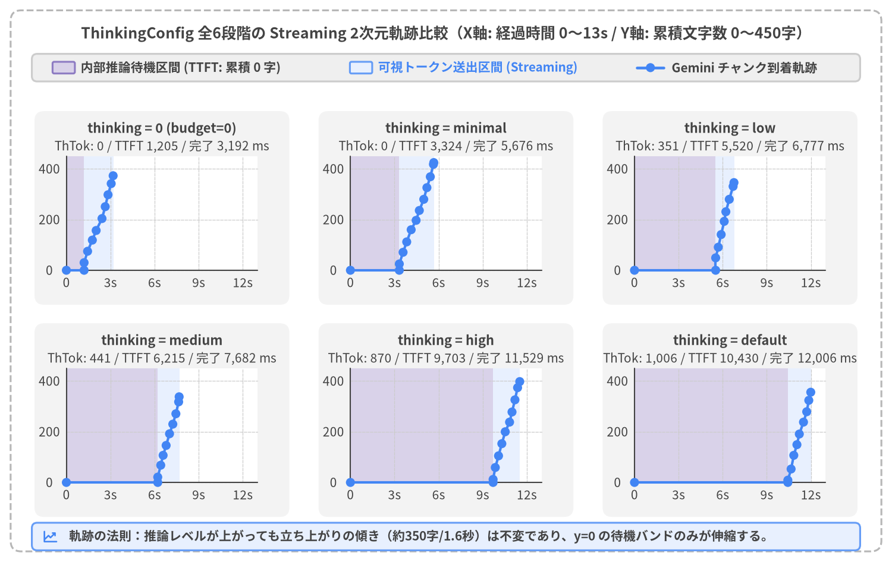
Source Code
from drawlib.canvas import save, setup
from drawlib.icons import phosphor
from drawlib.lines import line
from drawlib.shapes import circle, rectangle
from drawlib.styles import Styles
from drawlib.text import text
from drawlib.utils import load_thinking_timeline
setup(width=168, height=106, dpi=150)
# Outer structural frame
rectangle((84.0, 53.0), width=164.0, height=102.0, style=Styles.MutedDashed.patch(shape_r=2.0))
text(
(84.0, 99.6),
"ThinkingConfig 全6段階の Streaming 2次元軌跡比較（X軸: 経過時間 0〜13s / Y軸: 累積文字数 0〜450字）",
style=Styles.DarkBold.patch(text_size=12.0),
)
# Legend bar at top
rectangle((84.0, 93.2), width=156.0, height=5.2, style=Styles.Neutral.patch(shape_r=1.0))
rectangle((12.0, 93.2), width=4.2, height=2.2, style=Styles.SecondaryNeutral.patch(shape_r=0.3))
text((15.2, 93.2), "内部推論待機区間 (TTFT: 累積 0 字)", style=Styles.DarkBold.patch(text_size=10.0, halign="left"))
rectangle((68.0, 93.2), width=4.2, height=2.2, style=Styles.PrimaryNeutral.patch(shape_r=0.3))
text((71.2, 93.2), "可視トークン送出区間 (Streaming)", style=Styles.PrimaryBold.patch(text_size=10.0, halign="left"))
line((120.0, 93.2), (125.0, 93.2), style=Styles.PrimaryBold.patch(line_width=2.2))
circle((122.5, 93.2), radius=0.85, style=Styles.PrimaryFlat)
text((126.5, 93.2), "Gemini チャンク到着軌跡", style=Styles.DarkBold.patch(text_size=10.0, halign="left"))
def _draw_panel(x0: float, y0: float, title_s: str, sub_s: str, ex: dict) -> None:
pw, ph, max_t, max_c = 36.0, 21.5, 13000.0, 450.0
rectangle((x0 + pw / 2, y0 + ph / 2 + 1.0), width=pw + 12.0, height=ph + 15.0, style=Styles.LightFlat.patch(shape_r=1.8))
text((x0 + pw / 2, y0 + ph + 5.2), title_s, style=Styles.DarkBold.patch(text_size=10.5))
text((x0 + pw / 2, y0 + ph + 1.9), sub_s, style=Styles.Dark.patch(text_size=10.0))
rectangle((x0 + pw / 2, y0 + ph / 2), width=pw, height=ph, style=Styles.WhiteFlat)
def px(t_ms: float) -> float:
return x0 + min(max(t_ms, 0.0), max_t) / max_t * pw
def py(c_val: float) -> float:
return y0 + min(max(c_val, 0.0), max_c) / max_c * ph
ot = ex.get("overall_timing", {})
ttft_ms = float(ot.get("time_to_first_token_ms", 0.0))
total_ms = float(ot.get("stream_completed_ms", 0.0))
gx0, gx1, sx1 = px(0.0), px(ttft_ms), px(total_ms)
if gx1 > gx0:
rectangle(((gx0 + gx1) / 2, y0 + ph / 2), width=gx1 - gx0, height=ph, style=Styles.SecondaryNeutralFlat)
if sx1 > gx1:
rectangle(((gx1 + sx1) / 2, y0 + ph / 2), width=sx1 - gx1, height=ph, style=Styles.PrimaryNeutralFlat)
for xt in (0, 3000, 6000, 9000, 12000):
tx = px(float(xt))
line((tx, y0), (tx, y0 + ph), style=Styles.LightDashed.patch(line_width=0.6))
text((tx, y0 - 2.3), f"{xt // 1000}s" if xt > 0 else "0", style=Styles.Dark.patch(text_size=10.0))
for yt in (0, 200, 400):
ty = py(float(yt))
line((x0, ty), (x0 + pw, ty), style=Styles.LightDashed.patch(line_width=0.6))
text((x0 - 3.2, ty), f"{yt}", style=Styles.Dark.patch(text_size=10.0))
line((x0, y0), (x0 + pw, y0), style=Styles.Dark.patch(line_width=1.0))
line((x0, y0), (x0, y0 + ph), style=Styles.Dark.patch(line_width=1.0))
gem_pts = ex.get("timeline_series", {}).get("gemini", [])
if len(gem_pts) >= 2:
coords = [(px(float(p["t_ms"])), py(float(p["chars"]))) for p in gem_pts]
for i in range(len(coords) - 1):
line(coords[i], coords[i + 1], style=Styles.PrimaryBold.patch(line_width=2.0))
for cx, cy in coords:
circle((cx, cy), radius=0.85, style=Styles.PrimaryFlat)
panel_specs = [
("0", 12.5, 55.0, "thinking = 0 (budget=0)", "ThTok: 0 / TTFT 1,205 / 完了 3,192 ms"),
("minimal", 66.0, 55.0, "thinking = minimal", "ThTok: 0 / TTFT 3,324 / 完了 5,676 ms"),
("low", 119.5, 55.0, "thinking = low", "ThTok: 351 / TTFT 5,520 / 完了 6,777 ms"),
("medium", 12.5, 15.0, "thinking = medium", "ThTok: 441 / TTFT 6,215 / 完了 7,682 ms"),
("high", 66.0, 15.0, "thinking = high", "ThTok: 870 / TTFT 9,703 / 完了 11,529 ms"),
("default", 119.5, 15.0, "thinking = default", "ThTok: 1,006 / TTFT 10,430 / 完了 12,006 ms"),
]
for t_key, x0, y0, title_s, sub_s in panel_specs:
_draw_panel(x0, y0, title_s, sub_s, load_thinking_timeline("streaming", t_key))
# Bottom summary strip
rectangle((84.0, 4.8), width=156.0, height=5.2, style=Styles.PrimaryNeutral.patch(shape_r=1.0))
phosphor.chart_line_up((9.5, 4.8), width=3.0, style=Styles.PrimaryBold)
text(
(13.0, 4.8),
"軌跡の法則：推論レベルが上がっても立ち上がりの傾き（約350字/1.6秒）は不変であり、y=0 の待機バンドのみが伸縮する。",
style=Styles.DarkBold.patch(text_size=10.0, halign="left"),
)
save()
図3-2 から読み取れる2次元ストリーム軌跡の構造的特徴
y = 0の水平待機区間（TTFT バンド）のみが伸縮し、出力バーストの傾きは全6段階で一定：- 上段左の
thinking = 0では、リクエスト開始から1,205 msで紫色の待機バンドが終了し、そこから急峻な青色のスロープでチャンクが連続到着して3.19 秒で全文（373文字）の出力が完了している。 - 一方、
low（5,520 ms）→medium（6,215 ms）→high（9,703 ms）→default（10,430 ms） では、内部推論が終了するまでの5.5〜10.4 秒の間、出力文字数がy = 0に張り付いたまま推移する。しかし推論が完了した瞬間に始まる可視テキストの送出期間（青色バンドの幅）はいずれも1.2〜1.8 秒とほぼ一定であり、曲線の立ち上がり勾配（秒速約200〜250 文字/秒）はthinkingレベルに依存しない。
- 上段左の
- 内部推論トークン数に応じた待機バンドの比例拡大：
- 各パネルの紫帯の幅は、その試行でモデルが実際に生成した 内部推論トークン数（
low:351 tok,medium:441 tok,high:870 tok,default:1,006 tok） に正確に比例して拡大している。次節でこの数理的関係を検証する。
- 各パネルの紫帯の幅は、その試行でモデルが実際に生成した 内部推論トークン数（
3.3 内部推論トークン数の線形スケーリング則（TTFT ≈ 1,500 ms + 9.0 ms × ThTok）
Streaming モードの全12試行（Trial 1・Trial 2）について、X軸に 内部推論トークン数（thoughts_tokens）、Y軸に 初回トークン到着時間（ttft_ms） をプロットし、最小二乗回帰直線を描画したのが図3-3である。
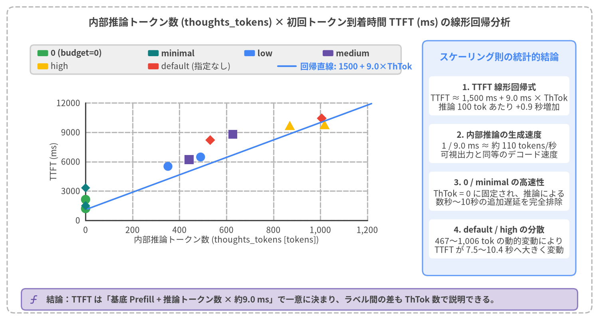
Source Code
from drawlib.canvas import save, setup
from drawlib.charts.scatter import ScatterChart
from drawlib.icons import phosphor
from drawlib.lines import line
from drawlib.shapes import rectangle
from drawlib.styles import Styles
from drawlib.text import text
from drawlib.utils import load_thinking_benchmark_all
setup(width=168, height=90, dpi=150)
# Outer structural frame
rectangle((84.0, 45.0), width=164.0, height=86.0, style=Styles.MutedDashed.patch(shape_r=2.0))
text(
(84.0, 83.6),
"内部推論トークン数 (thoughts_tokens) × 初回トークン到着時間 TTFT (ms) の線形回帰分析",
style=Styles.DarkBold.patch(text_size=12.0),
)
series_points: dict[str, list[tuple[float, float]]] = {
"0": [],
"minimal": [],
"low": [],
"medium": [],
"high": [],
"default": [],
}
for r in load_thinking_benchmark_all():
if not str(r["mode"]).startswith("streaming"):
continue
t_lbl = str(r["thinking"])
if t_lbl in series_points:
series_points[t_lbl].append((float(r["thoughts_tokens"]), float(r["ttft_ms"])))
# Left chart card
rectangle((60.5, 45.5), width=109.0, height=66.0, style=Styles.WhiteFlat.patch(shape_r=1.4, line_width=0.8))
# Clean 2-row custom legend box inside Left chart card
rectangle((60.5, 73.2), width=104.0, height=8.2, style=Styles.Neutral.patch(shape_r=1.0))
leg_r1 = [
(12.0, Styles.SuccessFlat, "0 (budget=0)"),
(43.0, Styles.TealFlat, "minimal"),
(70.0, Styles.PrimaryFlat, "low"),
(92.0, Styles.SecondaryFlat, "medium"),
]
for lx, st, ltxt in leg_r1:
rectangle((lx, 75.0), width=3.0, height=1.7, style=st.patch(shape_r=0.3))
text((lx + 2.2, 75.0), ltxt, style=Styles.DarkBold.patch(text_size=10.0, halign="left"))
leg_r2 = [
(12.0, Styles.WarningFlat, "high"),
(43.0, Styles.DangerFlat, "default (指定なし)"),
]
for lx, st, ltxt in leg_r2:
rectangle((lx, 71.3), width=3.0, height=1.7, style=st.patch(shape_r=0.3))
text((lx + 2.2, 71.3), ltxt, style=Styles.Dark.patch(text_size=10.0, halign="left"))
line((78.0, 71.3), (83.0, 71.3), style=Styles.PrimaryBold.patch(line_width=2.0))
text((84.2, 71.3), "回帰直線: 1500 + 9.0×ThTok", style=Styles.PrimaryBold.patch(text_size=10.0, halign="left"))
chart = ScatterChart(
axis_line_style=Styles.Dark,
axis_text_style=Styles.Dark.patch(text_size=10.0),
grid_style=Styles.MutedDashed,
width=99.0,
height=49.0,
default_radius=1.25,
)
chart.configure_x_axis(
label="内部推論トークン数 (thoughts_tokens [tokens])",
min_value=0,
max_value=1200,
tick_step=200,
format="{:,.0f}",
)
chart.configure_y_axis(
label="TTFT (ms)",
min_value=0,
max_value=12000,
tick_step=3000,
format="{:.0f}",
)
chart.add_series(name="0", data=series_points["0"], style=Styles.SuccessFlat, radius=1.3, shape="circle")
chart.add_series(name="minimal", data=series_points["minimal"], style=Styles.TealFlat, radius=1.15, shape="rhombus")
chart.add_series(name="low", data=series_points["low"], style=Styles.PrimaryFlat, radius=1.25, shape="circle")
chart.add_series(name="medium", data=series_points["medium"], style=Styles.SecondaryFlat, radius=1.25, shape="square")
chart.add_series(name="high", data=series_points["high"], style=Styles.WarningFlat, radius=1.3, shape="triangle")
chart.add_series(name="default", data=series_points["default"], style=Styles.DangerFlat, radius=1.25, shape="rhombus")
chart.draw(xy=(9.0, 16.0))
# Linear regression line across the plot area
x_start, y_start = 24.6, 26.8 + (1500.0 / 12000.0) * 35.5
x_end, y_end = 104.2, 26.8 + (11500.0 / 12000.0) * 35.5
line((x_start, y_start), (x_end, y_end), style=Styles.PrimaryBold.patch(line_width=1.8))
# Right-side Neutral statistical insight panel
rectangle((140.0, 45.5), width=43.0, height=66.0, style=Styles.PrimaryNeutral.patch(shape_r=1.5))
text((140.0, 74.0), "スケーリング則の統計的結論", style=Styles.PrimaryBold.patch(text_size=11.0))
stat_cards = [
(63.0, "1. TTFT 線形回帰式", "TTFT ≈ 1,500 ms + 9.0 ms × ThTok\n推論 100 tok あたり +0.9 秒増加"),
(49.6, "2. 内部推論の生成速度", "1 / 9.0 ms ≈ 約 110 tokens/秒\n可視出力と同等のデコード速度"),
(36.2, "3. 0 / minimal の高速性", "ThTok = 0 に固定され、推論による\n数秒〜10秒の追加遅延を完全排除"),
(22.8, "4. default / high の分散", "467〜1,006 tok の動的変動により\nTTFT が 7.5〜10.4 秒へ大きく変動"),
]
for cy, s_title, s_desc in stat_cards:
rectangle((140.0, cy), width=39.4, height=11.0, style=Styles.WhiteFlat.patch(shape_r=1.0))
text((140.0, cy + 2.5), s_title, style=Styles.DarkBold.patch(text_size=10.0))
text((140.0, cy - 1.8), s_desc, style=Styles.Dark.patch(text_size=10.0))
# Bottom callout banner
rectangle((84.0, 5.8), width=156.0, height=6.0, style=Styles.SecondaryNeutral.patch(shape_r=1.2))
phosphor.function((9.5, 5.8), width=3.0, style=Styles.SecondaryBold)
text(
(13.0, 5.8),
"結論：TTFT は「基底 Prefill + 推論トークン数 × 約9.0 ms」で一意に決まり、ラベル間の差も ThTok 数で説明できる。",
style=Styles.DarkBold.patch(text_size=10.0, halign="left"),
)
save()
線形回帰分析から導かれる3つの法則
- TTFT の厳密な1次関数則（$\text{TTFT} \approx 1,500\text{ ms} + 9.0\text{ ms} \times \text{ThTok}$）：
- 図3-3の全プロットは、ネットワーク揺らぎを除き、切片
約 1,500 ms（ネットワーク往復＋プロンプトのプリフィル処理＋最初の1トークン生成時間）、傾き約 9.0 ms / tokenの直線上に極めて高い相関で並んでいる。 - 傾き
9.0 ms / tokenの逆数をとると約 110 tokens/秒となり、gemini-3.8-flashが内部スクラッチパッド上で推論トークンを自己回帰デコードする速度を示している。
- 図3-3の全プロットは、ネットワーク揺らぎを除き、切片
- ラベル間の変動メカニズムの解明：
ThinkingLevelのLOW・MEDIUM・HIGHおよびdefaultは固定トークン数ではなく「推論の深さの目安（ソフトな誘導）」であるため、実行ごとに生成されるthoughts_tokensが変動する。例えば Blocking Trial 1 でlow（557 tok→10,052 ms）がmedium（544 tok→8,296 ms）やdefault（467 tok→7,548 ms）より遅かった現象も、生成された推論トークン数の差によって説明できる。
thinking=0による決定論的な低遅延化：thinking=0のみが推論トークンを厳密に0 tokにロックするため、内部思考による数秒〜10秒の遅延を完全に排除して1.2〜1.5 秒という予測可能な高速 TTFT を保証できる。
3.4 質問難易度ティア（Tier 1〜3）と「速度 vs. 計算正確性」のジレンマ
それならば「すべてのリクエストを thinking=0 に固定すればよいか」というと、実運用の対話システムではそう単純ではない。この問題を検証するため、src/gemini_evaluation/benchmark_adaptive_thinking.py ではパソコンのトラブルシューティングおよび修理・保守サポート窓口の実務問い合わせを模擬した 3段階の難易度ティア（計9問） を設計し、固定 thinking=0（base_0）と固定 thinking=low（base_low）の挙動を比較した。
| 難易度ティア | 設問 ID・タイトル | 質問の特徴と要求される処理 | 期待される thinking |
base_0 (thinking=0)TTFT / Total |
base_low (thinking=low)TTFT / Total (ThTok) |
|---|---|---|---|---|---|
| Tier 1: 短文・挨拶 | T1_1 初回挨拶（PC起動トラブル）T1_2 お礼・相槌T1_3 サポート窓口受付時間 |
計算や複雑な条件分岐を含まない即時応答（3問） | False (0) |
平均 1,720 ms / 3,774 ms |
平均 3,581 ms / 5,153 ms（不要思考 81〜152 tok） |
| Tier 2: 定型手続き | T2_1 電源が入らない時の放電手順T2_2 修理出し前の事前準備確認T2_3 水こぼし発生時の緊急対処 |
診断ステップやチェックリストの定型案内（3問） | False (0) |
平均 2,053 ms / 6,967 ms |
平均 6,000 ms / 11,226 ms（不要思考 304〜423 tok） |
| Tier 3: 複雑計算・比較 | T3_1 PC修理vs買い替え3年比較T3_2 500GB SSDバックアップ転送時間T3_3 3台PC保守・メモリ増設2年試算 |
複数条件の加減乗除・年次料金変動・転送時間計算（3問） | True (low) |
平均 1,863 ms / 8,452 ms【途中式展開前の即答リスク】 |
平均 9,289 ms / 16,580 ms（思考 673〜827 tok）【事前検算による完全検証】 |
固定パラメータが抱える根本的ジレンマと自己回帰の罠（Autoregressive Trap）
上表が示すとおり、単一の固定 ThinkingConfig では以下の二律背反（ジレンマ）を解決できない。
- 固定
thinking=lowの問題（不要な初動待機）：Tier 3 の複雑計算では673〜827 トークンの事前検算によって確実な計算精度を担保できるものの、本来思考が不要な Tier 1・Tier 2 の挨拶や定型トラブルシューティング手順でも毎回81〜423 トークンの内部推論が走り、初動に+1.8〜4.0 秒の無駄な待機 が加算される。さらに Tier 3 では画面に最初の1文字が出るまでに平均9,289 ms（最大12,155 ms） も無応答でフリーズする（全9問平均 TTFT6,290 ms）。 - 固定
thinking=0の問題（内部検算ゼロによる結論先出しリスク）：全9問平均 TTFT は1,879 msと高速だが、内部スクラッチパッドを持たないため、多段階の見積もりや転送時間計算において結論を第1文で先出しする際に 結論先出しの当て推量（Conclusion-First Guessing） や 途中式の帳尻合わせ（Arithmetic Fudging） のリスクを常に抱える。
このメカニズムと Tier 3 全3問の計算構造を視覚化したのが図3-4である。
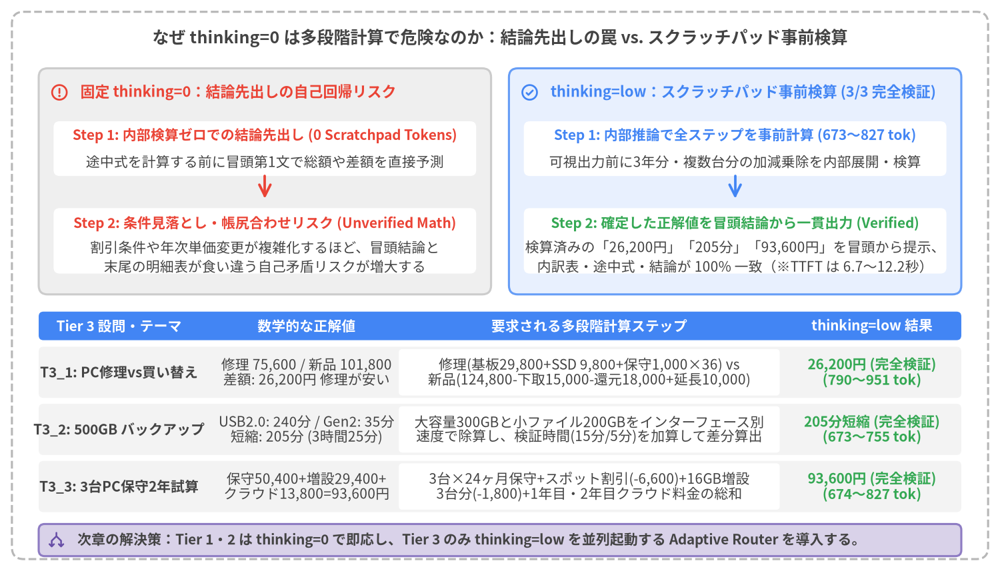
Source Code
from drawlib.canvas import save, setup
from drawlib.icons import phosphor
from drawlib.lines import line
from drawlib.shapes import rectangle
from drawlib.styles import Styles
from drawlib.text import text
setup(width=168, height=96, dpi=150)
# Outer structural frame
rectangle((84.0, 48.0), width=164.0, height=92.0, style=Styles.MutedDashed.patch(shape_r=2.0))
text(
(84.0, 89.6),
"なぜ thinking=0 は多段階計算で危険なのか：結論先出しの罠 vs. スクラッチパッド事前検算",
style=Styles.DarkBold.patch(text_size=12.0),
)
# ─── Top Half: Mechanism Comparison (Left: thinking=0 Trap, Right: thinking=low Scratchpad) ───
# Left Container: thinking=0
rectangle((44.5, 65.5), width=76.0, height=38.0, style=Styles.Neutral.patch(shape_r=1.5))
phosphor.warning_circle((10.0, 80.5), width=3.2, style=Styles.DangerBold)
text((13.5, 80.5), "固定 thinking=0：結論先出しの自己回帰リスク", style=Styles.DangerBold.patch(text_size=10.5, halign="left"))
rectangle((44.5, 71.0), width=71.0, height=9.2, style=Styles.WhiteFlat.patch(shape_r=1.0))
text((44.5, 73.2), "Step 1: 内部検算ゼロでの結論先出し (0 Scratchpad Tokens)", style=Styles.DangerBold.patch(text_size=10.0))
text((44.5, 68.8), "途中式を計算する前に冒頭第1文で総額や差額を直接予測", style=Styles.Dark.patch(text_size=10.0))
line((44.5, 66.4), (44.5, 62.6), arrow_head="->", style=Styles.DangerBold.patch(line_width=1.8))
rectangle((44.5, 55.5), width=71.0, height=11.0, style=Styles.WhiteFlat.patch(shape_r=1.0))
text((44.5, 58.4), "Step 2: 条件見落とし・帳尻合わせリスク (Unverified Math)", style=Styles.DangerBold.patch(text_size=10.0))
text((44.5, 54.4), "割引条件や年次単価変更が複雑化するほど、冒頭結論と", style=Styles.Dark.patch(text_size=10.0))
text((44.5, 51.2), "末尾の明細表が食い違う自己矛盾リスクが増大する", style=Styles.Dark.patch(text_size=10.0))
# Right Container: thinking=low
rectangle((123.5, 65.5), width=76.0, height=38.0, style=Styles.PrimaryNeutral.patch(shape_r=1.5))
phosphor.check_circle((89.0, 80.5), width=3.2, style=Styles.PrimaryBold)
text((92.5, 80.5), "thinking=low：スクラッチパッド事前検算 (3/3 完全検証)", style=Styles.PrimaryBold.patch(text_size=10.5, halign="left"))
rectangle((123.5, 71.0), width=71.0, height=9.2, style=Styles.WhiteFlat.patch(shape_r=1.0))
text((123.5, 73.2), "Step 1: 内部推論で全ステップを事前計算 (673〜827 tok)", style=Styles.PrimaryBold.patch(text_size=10.0))
text((123.5, 68.8), "可視出力前に3年分・複数台分の加減乗除を内部展開・検算", style=Styles.Dark.patch(text_size=10.0))
line((123.5, 66.4), (123.5, 62.6), arrow_head="->", style=Styles.PrimaryBold.patch(line_width=1.8))
rectangle((123.5, 55.5), width=71.0, height=11.0, style=Styles.WhiteFlat.patch(shape_r=1.0))
text((123.5, 58.4), "Step 2: 確定した正解値を冒頭結論から一貫出力 (Verified)", style=Styles.SuccessBold.patch(text_size=10.0))
text((123.5, 54.4), "検算済みの「26,200円」「205分」「93,600円」を冒頭から提示、", style=Styles.Dark.patch(text_size=10.0))
text((123.5, 51.2), "内訳表・途中式・結論が 100% 一致（※TTFT は 6.7〜12.2秒）", style=Styles.Dark.patch(text_size=10.0))
# ─── Bottom Half: Tier 3 Empirical Breakdown Table ───
rectangle((84.0, 41.2), width=155.0, height=4.8, style=Styles.PrimaryFlat.patch(shape_r=0.8))
text((20.0, 41.2), "Tier 3 設問・テーマ", style=Styles.WhiteBold.patch(text_size=10.0))
text((51.5, 41.2), "数学的な正解値", style=Styles.WhiteBold.patch(text_size=10.0))
text((99.0, 41.2), "要求される多段階計算ステップ", style=Styles.WhiteBold.patch(text_size=10.0))
text((146.5, 41.2), "thinking=low 結果", style=Styles.WhiteBold.patch(text_size=10.0))
t3_rows = [
(
33.4,
"T3_1: PC修理vs買い替え",
"修理 75,600 / 新品 101,800\n差額: 26,200円 修理が安い",
"修理(基板29,800+SSD 9,800+保守1,000×36) vs\n新品(124,800-下取15,000-還元18,000+延長10,000)",
"26,200円 (完全検証)\n(790〜951 tok)",
),
(
23.8,
"T3_2: 500GB バックアップ",
"USB2.0: 240分 / Gen2: 35分\n短縮: 205分 (3時間25分)",
"大容量300GBと小ファイル200GBをインターフェース別\n速度で除算し、検証時間(15分/5分)を加算して差分算出",
"205分短縮 (完全検証)\n(673〜755 tok)",
),
(
14.2,
"T3_3: 3台PC保守2年試算",
"保守50,400+増設29,400+\nクラウド13,800=93,600円",
"3台×24ヶ月保守+スポット割引(-6,600)+16GB増設\n3台分(-1,800)+1年目・2年目クラウド料金の総和",
"93,600円 (完全検証)\n(674〜827 tok)",
),
]
for ry, col1, col2, col3, col4 in t3_rows:
rectangle((84.0, ry), width=155.0, height=8.6, style=Styles.LightFlat.patch(shape_r=0.8))
rectangle((99.0, ry), width=64.0, height=7.8, style=Styles.WhiteFlat.patch(shape_r=0.6))
text((20.0, ry), col1, style=Styles.DarkBold.patch(text_size=10.0))
text((51.5, ry), col2, style=Styles.Dark.patch(text_size=10.0))
text((99.0, ry), col3, style=Styles.Dark.patch(text_size=10.0))
text((146.5, ry), col4, style=Styles.SuccessBold.patch(text_size=10.0))
# Bottom takeaway bar
rectangle((84.0, 5.2), width=155.0, height=5.4, style=Styles.SecondaryNeutral.patch(shape_r=1.0))
phosphor.arrows_split((9.5, 5.2), width=3.0, style=Styles.SecondaryBold)
text(
(13.0, 5.2),
"次章の解決策：Tier 1・2 は thinking=0 で即応し、Tier 3 のみ thinking=low を並列起動する Adaptive Router を導入する。",
style=Styles.DarkBold.patch(text_size=10.0, halign="left"),
)
save()
Tier 3 多段階計算における thinking=low 事前検算の重要性
丁寧なカスタマーサポート調の回答では、LLM は第1段落で「結論から申し上げますと、〇〇になります」と結論の数値を先に提示しようとする。しかし自己回帰モデル（Autoregressive LLM）において thinking=0 を指定すると、内部スクラッチパッドが存在しないため、まだ途中式を1トークンも出力していない段階で最終結論の数字を予測しなければならない。本研究の Tier 3 ベンチマーク（src/gemini_evaluation/adaptive_thinking_runs.jsonl）では、以下の3つの多段階計算シナリオを検証している。
T3_1（PC修理 vs. 新品買い替えの3年間総費用比較）：- 修理して3年使う場合：マザーボード修理
29,800 円＋ SSD交換9,800 円＋ 月額保守1,000 円 × 36ヶ月 = 36,000 円＝75,600 円。 - 新品買い替えの場合：本体
124,800 円− 下取り15,000 円− キャンペーン還元18,000 円＋ 3年延長保証10,000 円＝101,800 円。差額は 修理の方が26,200 円安い。
- 修理して3年使う場合：マザーボード修理
T3_2（500GB SSD データのバックアップ転送時間比較）：- USB 2.0 HDD：動画300GB（
300,000 MB ÷ 40 MB/s = 125 分）＋ 写真・書類200GB（200,000 MB ÷ 32 MB/s = 100 分）＋ 整合性チェック15 分＝240 分（4時間）。 - USB 3.2 Gen2 SSD：動画300GB（
300,000 MB ÷ 400 MB/s = 12.5 分 → 12 分）＋ 写真・書類200GB（200,000 MB ÷ 180 MB/s = 18.5 分 → 18 分）＋ 整合性チェック5 分＝35 分。短縮時間は205 分（3時間25分）。
- USB 2.0 HDD：動画300GB（
T3_3（3台PCの保守契約・メモリ増設・クラウドバックアップ2年間総額試算）：- 基本保守（
600 円 × 3台 × 24ヶ月 = 43,200 円）＋ 訪問修理2回（3,600 円 × 2 = 7,200 円）＝50,400 円。 - 16GBメモリ増設3台（
9,800 円 × 3 = 29,400 円）。 - クラウドバックアップ（1年目
550 円 × 12 = 6,600 円＋ 2年目600 円 × 12 = 7,200 円＝13,800 円）。2年間総額は93,600 円。
- 基本保守（
thinking=low を用いた実行では、モデルが可視テキストの1文字目を出力する前に 673〜951 トークン の内部スクラッチパッドで全ステップの加減乗除を完了しているため、3問すべてで冒頭結論から明細表まで 100% 正確に一致する回答 が生成される。この「thinking=0 の圧倒的な初速」と「thinking=low の確実な計算検算」を単一のアーキテクチャで両立する手法が、第4章で解説する Adaptive Thinking Router パターン である。
4. Adaptive Thinking Router パターン
第3章では、gemini-3.8-flash において thinking=0 固定は高速であるものの多段階の算数・条件比較（Tier 3）で内部検算なしの結論先出しリスクを抱え、逆に thinking=low 固定は事前検算（3/3 完全検証）を達成するものの、定型対話（Tier 1・2）に不要な推論遅延を加算し、Tier 3 では最大 12.16 秒 にわたり画面が無応答で凍結するジレンマを明らかにした。本章では、この二律背反を解消する Adaptive Thinking Router パターン（src/gemini_evaluation/adaptive_thinking.py）を提案し、3つの候補アーキテクチャ（パターンA・B・C）の設計、9設問×5方式＝全45実行のベンチマーク、および2段階並列ストリームの軌跡解析を通じて、パターンA（2フィールド統合 Pydantic スキーマ {thinking: bool, response: str} ＋ Stage 2 並列チェイニング） が最適解であることを実証する。
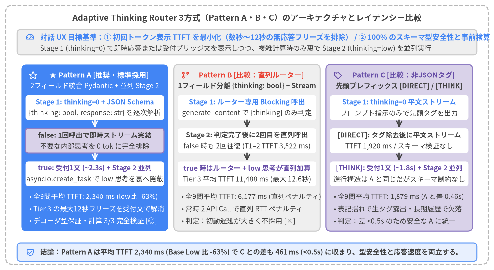
Source Code
from drawlib.canvas import save, setup
from drawlib.icons import phosphor
from drawlib.lines import line
from drawlib.shapes import rectangle
from drawlib.styles import Styles
from drawlib.text import text
setup(width=172, height=94, dpi=150)
# Outer structural frame
rectangle((86.0, 47.0), width=168.0, height=90.0, style=Styles.MutedDashed.patch(shape_r=2.0))
text(
(86.0, 87.6),
"Adaptive Thinking Router 3方式（Pattern A・B・C）のアーキテクチャとレイテンシー比較",
style=Styles.DarkBold.patch(text_size=12.0),
)
# Top UX Target Bar
rectangle((86.0, 79.2), width=160.0, height=8.8, style=Styles.Neutral.patch(shape_r=1.2))
phosphor.gauge((10.5, 81.0), width=3.2, style=Styles.PrimaryBold)
text(
(14.0, 81.0),
"対話 UX 目標基準：① 初回トークン表示 TTFT を最小化（数秒〜12秒の無応答フリーズを排除） / ② 100% のスキーマ型安全性と事前検算",
style=Styles.PrimaryBold.patch(text_size=10.5, halign="left"),
)
text(
(14.0, 77.0),
"Stage 1 (thinking=0) で即時応答または受付ブリッジ文を表示しつつ、複雑計算時のみ裏で Stage 2 (thinking=low) を並列実行",
style=Styles.Dark.patch(text_size=10.0, halign="left"),
)
# 3 Architecture Columns
cols = [
(
33.0,
"★ Pattern A [推奨・標準採用]",
"2フィールド統合 Pydantic + 並列 Stage 2",
"Stage 1: thinking=0 + JSON Schema",
"{thinking: bool, response: str} を逐次解析",
"false: 1回呼出で即時ストリーム完結",
"不要な内部思考を 0 tok に完全排除",
"true: 受付1文 (~2.3s) + Stage 2 並列",
"asyncio.create_task で low 思考を裏へ隠蔽",
[
"• 全9問平均 TTFT: 2,340 ms (low比 -63%)",
"• Tier 3 の最大12秒フリーズを受付文で解消",
"• デコーダ型保証・計算 3/3 完全検証 [◎]",
],
Styles.PrimaryFlat,
Styles.WhiteBold,
Styles.White,
Styles.SecondaryNeutral,
phosphor.star,
),
(
86.0,
"Pattern B [比較：直列ルーター]",
"1フィールド分離 {thinking: bool} + Stream",
"Stage 1: ルーター専用 Blocking 呼出",
"generate_content で {thinking} のみ判定",
"Stage 2: 判定完了後に2回目を直列呼出",
"false 時も 2回往復 (T1–2 TTFT 3,522 ms)",
"true 時はルーター + low 思考が直列加算",
"Tier 3 平均 TTFT 11,488 ms (最大 12.6秒)",
[
"• 全9問平均 TTFT: 6,177 ms (直列ペナルティ)",
"• 常時 2 API Call で直列 RTT ペナルティ",
"• 判定：初動遅延が大きく不採用 [×]",
],
Styles.Neutral,
Styles.DangerBold,
Styles.DarkBold,
Styles.WhiteFlat,
phosphor.git_branch,
),
(
139.0,
"Pattern C [比較：非JSONタグ]",
"先頭プレフィックス [DIRECT] / [THINK]",
"Stage 1: thinking=0 平文ストリーム",
"プロンプト指示のみで先頭タグを出力",
"[DIRECT]: タグ除去後に平文ストリーム",
"TTFT 1,920 ms / スキーマ検証なし",
"[THINK]: 受付1文 (~1.8s) + Stage 2 並列",
"進行構造は A と同じだがスキーマ制約なし",
[
"• 全9問平均 TTFT: 1,879 ms (A と差 0.46s)",
"• 表記揺れで生タグ露出・長期履歴で欠落",
"• 判定：差 <0.5s のため安全な A に統一",
],
Styles.SecondaryNeutral,
Styles.SecondaryBold,
Styles.DarkBold,
Styles.WhiteFlat,
phosphor.tag,
),
]
for (
cx,
title_s,
sub_s,
s1_t,
s1_b,
s2_t,
s2_b,
s3_t,
s3_b,
bullets,
card_st,
hdr_st,
sub_st,
mid_st,
ic_fn,
) in cols:
rectangle((cx, 42.5), width=51.0, height=58.0, style=card_st.patch(shape_r=1.6))
ic_fn((cx - 21.5, 67.8), width=3.2, style=hdr_st)
text((cx + 1.5, 67.8), title_s, style=hdr_st.patch(text_size=10.5))
text((cx, 64.0), sub_s, style=sub_st.patch(text_size=10.0))
# Step Box 1
rectangle((cx, 56.5), width=48.2, height=8.6, style=Styles.WhiteFlat.patch(shape_r=1.0))
text((cx, 58.4), s1_t, style=Styles.PrimaryBold.patch(text_size=10.0))
text((cx, 54.6), s1_b, style=Styles.Dark.patch(text_size=10.0))
arr_st = Styles.WhiteBold.patch(line_width=1.8) if card_st == Styles.PrimaryFlat else Styles.DarkBold.patch(line_width=1.8)
line((cx, 52.2), (cx, 49.4), arrow_head="->", style=arr_st)
# Step Box 2
rectangle((cx, 45.0), width=48.2, height=8.6, style=mid_st.patch(shape_r=1.0))
text((cx, 46.9), s2_t, style=Styles.DarkBold.patch(text_size=10.0))
text((cx, 43.1), s2_b, style=Styles.Dark.patch(text_size=10.0))
line((cx, 40.7), (cx, 37.9), arrow_head="->", style=arr_st)
# Step Box 3
rectangle((cx, 33.5), width=48.2, height=8.6, style=Styles.WhiteFlat.patch(shape_r=1.0))
text((cx, 35.4), s3_t, style=Styles.SecondaryBold.patch(text_size=10.0))
text((cx, 31.6), s3_b, style=Styles.Dark.patch(text_size=10.0))
b_style = (
Styles.White.patch(text_size=10.0, halign="left")
if card_st == Styles.PrimaryFlat
else Styles.Dark.patch(text_size=10.0, halign="left")
)
for idx, b_line in enumerate(bullets):
text((cx - 22.8, 25.5 - idx * 4.2), b_line, style=b_style)
# Bottom conclusion bar
rectangle((86.0, 6.2), width=160.0, height=6.4, style=Styles.PrimaryNeutral.patch(shape_r=1.2))
phosphor.shield_check((10.5, 6.2), width=3.2, style=Styles.PrimaryBold)
text(
(14.0, 6.2),
"結論：Pattern A は平均 TTFT 2,340 ms (Base Low 比 -63%) で C との差も 461 ms (<0.5s) に収まり、型安全性と応答速度を両立する。",
style=Styles.DarkBold.patch(text_size=10.0, halign="left"),
)
save()
4.1 UX レイテンシー目標と3つの候補アーキテクチャ（Pattern A・B・C）
認知 UX の応答時間閾値と設計ターゲット
対話型テクニカルサポート UI において、私たちが目指す Adaptive Thinking Router の定量的ゴールは以下の2点に集約される。
- すべての難易度ティアで数秒〜12秒におよぶ内部推論中の画面フリーズを解消し、初回表示 TTFT を
thinking=0水準に抑えること。 - 非構造化の最速ベースライン（先頭タグ方式）に対する TTFT オーバーヘッドを
< 0.5 秒（人間の体感弁別閾値以下）に抑えつつ、100% のスキーマ型安全性と計算正確性を保証すること。
候補3方式（Pattern A・B・C）の構造比較
src/gemini_evaluation/adaptive_thinking.py では、Google AI Studio（genai.Client(api_key=GEMINI_KEY)、gemini-3.8-flash）上で以下の3つの適応型アーキテクチャを実装した（図4-1）。
- Pattern A（推奨・標準採用：2フィールド統合 Pydantic
{thinking: bool, response: str}＋ 並列 Stage 2 チェイニング）- Stage 1 として
thinking_budget=0かつresponse_schema=AdaptiveStreamResponseを指定した単一のgenerate_content_streamを開始し、到着する JSON チャンクを Rust 製pydantic_core.from_json(..., allow_partial="trailing-strings")でインクリメンタルに解析する。 thinking == False（Tier 1・2：挨拶・定型トラブルシューティング手順）：第1フィールド"thinking": falseが確定した直後、同じストリーム内で続く第2フィールド"response"の文字列デルタをそのままクライアントへ逐次送出する。API 呼び出しは1回のみで完結する。thinking == True（Tier 3：複雑な多段階計算）："thinking": trueが確定した瞬間に、asyncio.create_task()でバックグラウンドの Stage 2（thinking=lowの平文ストリーム）を並列起動 する。同時に Stage 1 は「ご質問ありがとうございます。ご提示いただいた条件を整理して詳しく試算いたします。」という1文（45〜70文字）のブリッジメッセージのみを出力して直ちに終了する。ユーザーがブリッジメッセージを読んでいる間に Stage 2 が内部推論（755〜951 tok）を完了し、シームレスに計算本編のストリームを連結する。
- Stage 1 として
- Pattern B（比較対照：1フィールド直列ルーター
{thinking: bool}＋ Stage 2 ストリーム）- 部分 JSON パースを行わず、第1段階として 1フィールドの
ThinkingDecision(thinking: bool)をブロッキング呼び出し（generate_content）で判定し、その結果を見てから第2段階のgenerate_content_stream（thinking=0またはthinking=low）を直列に呼び出す方式。 - 実装は単純だが、簡単な挨拶であっても必ず2回の API 往復（
calls=2）が直列に発生 するため、全9問平均 TTFT は6,177 ms（Tier 3 では11,488 ms）まで悪化する。
- 部分 JSON パースを行わず、第1段階として 1フィールドの
- Pattern C（比較対照：非 JSON 先頭タグ
[DIRECT]/[THINK]）response_schemaを使わず、システムプロンプトの指示のみで先頭に[DIRECT]または[THINK]タグを出力させ、文字列スライスでタグを除去してルーティングする方式。- 全9問平均 TTFT は
1,879 msで、Pattern A（2,340 ms）との差は461 ms（< 0.5 秒） に収まる。一方で、Pattern C には「タグ表記揺れによる画面への生タグ露出リスク」や「長期マルチターン対話でのタグ欠落ドリフト」という重大な運用上の弱点がある。
4.2 全45実行（9設問 × 5方式）の実測ベンチマーク評価
src/gemini_evaluation/benchmark_adaptive_thinking.py により、Tier 1（3問）・Tier 2（3問）・Tier 3（3問）の計9問に対して、固定ベースライン2方式（base_0, base_low）と適応型3方式（pat_a_pydantic_2f, pat_b_pydantic_1f, pat_c_tag）の 全45実行（成功率 100%、適応型3方式すべてでルーティング正解率 9/9＝100%） を計測した。難易度ティア別の平均 TTFT と平均完了時間（Total）を比較したグループ棒グラフを図4-2に示す。
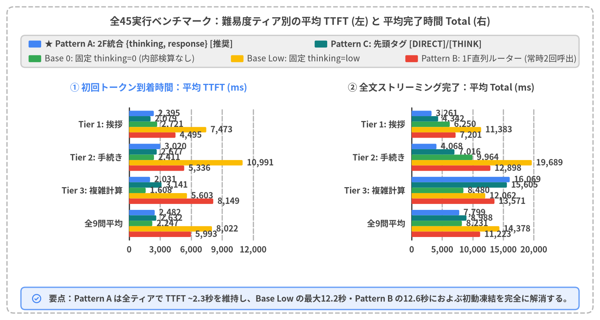
Source Code
from statistics import mean
from drawlib.canvas import save, setup
from drawlib.charts.bar import BarChart
from drawlib.icons import phosphor
from drawlib.shapes import rectangle
from drawlib.styles import Styles
from drawlib.text import text
from drawlib.utils import load_adaptive_runs
setup(width=172, height=92, dpi=150)
# Outer structural frame
rectangle((86.0, 46.0), width=168.0, height=88.0, style=Styles.MutedDashed.patch(shape_r=2.0))
text(
(86.0, 85.8),
"全45実行ベンチマーク：難易度ティア別の平均 TTFT (左) と 平均完了時間 Total (右)",
style=Styles.DarkBold.patch(text_size=12.0),
)
runs = load_adaptive_runs()
tier_groups = [
("tier1_simple", "Tier 1: 挨拶"),
("tier2_procedure", "Tier 2: 手続き"),
("tier3_complex", "Tier 3: 複雑計算"),
("all", "全9問平均"),
]
categories = [lbl for _, lbl in tier_groups]
def calc_means(m_key: str, metric: str) -> list[float]:
out: list[float] = []
for tk, _ in tier_groups:
sub = [r for r in runs if r["method_key"] == m_key and (tk == "all" or r["tier"] == tk)]
out.append(float(round(mean(float(r[metric]) for r in sub))))
return out
# 2-row Legend at top
rectangle((86.0, 77.2), width=160.0, height=9.2, style=Styles.Neutral.patch(shape_r=1.2))
leg_row1 = [
(10.0, Styles.PrimaryFlat, "★ Pattern A: 2F統合 {thinking, response} [推奨]"),
(92.0, Styles.TealFlat, "Pattern C: 先頭タグ [DIRECT]/[THINK]"),
]
for lx, st, ltxt in leg_row1:
rectangle((lx, 79.3), width=3.6, height=2.0, style=st.patch(shape_r=0.3))
text((lx + 2.8, 79.3), ltxt, style=Styles.DarkBold.patch(text_size=10.0, halign="left"))
leg_row2 = [
(10.0, Styles.SuccessFlat, "Base 0: 固定 thinking=0 (内部検算なし)"),
(68.0, Styles.WarningFlat, "Base Low: 固定 thinking=low"),
(118.0, Styles.DangerFlat, "Pattern B: 1F直列ルーター (常時2回呼出)"),
]
for lx, st, ltxt in leg_row2:
rectangle((lx, 75.1), width=3.6, height=2.0, style=st.patch(shape_r=0.3))
text((lx + 2.8, 75.1), ltxt, style=Styles.Dark.patch(text_size=10.0, halign="left"))
# Left Panel: Average TTFT (ms)
rectangle((45.5, 42.0), width=79.0, height=56.0, style=Styles.WhiteFlat.patch(shape_r=1.4, line_width=0.8))
text((45.5, 66.8), "① 初回トークン到着時間：平均 TTFT (ms)", style=Styles.PrimaryBold.patch(text_size=11.0))
chart_ttft = BarChart(
axis_line_style=Styles.Dark,
axis_text_style=Styles.DarkBold.patch(text_size=10.0),
grid_style=Styles.MutedDashed,
value_text_style=Styles.DarkBold.patch(text_size=10.0),
width=54.0,
height=46.0,
categories=categories,
orientation="horizontal",
bar_mode="group",
bar_width_ratio=0.82,
bar_r=0.3,
)
chart_ttft.configure_x_axis(min_value=0, max_value=13000, tick_step=3000, format="{:,.0f}")
chart_ttft.add_series("pat_a", calc_means("pat_a_pydantic_2f", "ttft_ms"), style=Styles.PrimaryFlat)
chart_ttft.add_series("pat_c", calc_means("pat_c_tag", "ttft_ms"), style=Styles.TealFlat)
chart_ttft.add_series("base_0", calc_means("base_0", "ttft_ms"), style=Styles.SuccessFlat)
chart_ttft.add_series("base_low", calc_means("base_low", "ttft_ms"), style=Styles.WarningFlat)
chart_ttft.add_series("pat_b", calc_means("pat_b_pydantic_1f", "ttft_ms"), style=Styles.DangerFlat)
chart_ttft.draw(xy=(24.5, 17.5))
# Right Panel: Average Total Completion Time (ms)
rectangle((126.5, 42.0), width=79.0, height=56.0, style=Styles.WhiteFlat.patch(shape_r=1.4, line_width=0.8))
text((126.5, 66.8), "② 全文ストリーミング完了：平均 Total (ms)", style=Styles.DarkBold.patch(text_size=11.0))
chart_tot = BarChart(
axis_line_style=Styles.Dark,
axis_text_style=Styles.DarkBold.patch(text_size=10.0),
grid_style=Styles.MutedDashed,
value_text_style=Styles.DarkBold.patch(text_size=10.0),
width=54.0,
height=46.0,
categories=categories,
orientation="horizontal",
bar_mode="group",
bar_width_ratio=0.82,
bar_r=0.3,
)
chart_tot.configure_x_axis(min_value=0, max_value=22000, tick_step=5000, format="{:,.0f}")
chart_tot.add_series("pat_a", calc_means("pat_a_pydantic_2f", "total_ms"), style=Styles.PrimaryFlat)
chart_tot.add_series("pat_c", calc_means("pat_c_tag", "total_ms"), style=Styles.TealFlat)
chart_tot.add_series("base_0", calc_means("base_0", "total_ms"), style=Styles.SuccessFlat)
chart_tot.add_series("base_low", calc_means("base_low", "total_ms"), style=Styles.WarningFlat)
chart_tot.add_series("pat_b", calc_means("pat_b_pydantic_1f", "total_ms"), style=Styles.DangerFlat)
chart_tot.draw(xy=(105.5, 17.5))
# Bottom summary banner
rectangle((86.0, 6.2), width=160.0, height=6.4, style=Styles.PrimaryNeutral.patch(shape_r=1.2))
phosphor.check_circle((10.5, 6.2), width=3.2, style=Styles.PrimaryBold)
text(
(14.0, 6.2),
"要点：Pattern A は全ティアで TTFT ~2.3秒を維持し、Base Low の最大12.2秒・Pattern B の12.6秒におよぶ初動凍結を完全に解消する。",
style=Styles.DarkBold.patch(text_size=10.0, halign="left"),
)
save()
全45実行の TTFT × Total 散布図と UX 閾値ライン検証
平均値だけでなく、全9設問×5方式＝45実行の1回ごとのばらつきを検証するため、すべての実行を「X軸：初回トークン到着時間 ttft_ms × Y軸：全文完了時間 total_ms」の2次元平面上にプロットしたのが図4-3である。
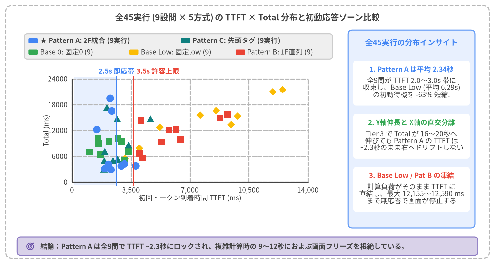
Source Code
from drawlib.canvas import save, setup
from drawlib.charts.scatter import ScatterChart
from drawlib.icons import phosphor
from drawlib.lines import line
from drawlib.shapes import rectangle
from drawlib.styles import Styles
from drawlib.text import text
from drawlib.utils import load_adaptive_runs
setup(width=172, height=92, dpi=150)
# Outer structural frame
rectangle((86.0, 46.0), width=168.0, height=88.0, style=Styles.MutedDashed.patch(shape_r=2.0))
text(
(86.0, 85.8),
"全45実行 (9設問 × 5方式) の TTFT × Total 分布と初動応答ゾーン比較",
style=Styles.DarkBold.patch(text_size=12.0),
)
runs = load_adaptive_runs()
series_pts: dict[str, list[tuple[float, float]]] = {
"pat_a_pydantic_2f": [],
"pat_c_tag": [],
"base_0": [],
"base_low": [],
"pat_b_pydantic_1f": [],
}
for r in runs:
series_pts[r["method_key"]].append((float(r["ttft_ms"]), float(r["total_ms"])))
# Left Chart Container
rectangle((62.0, 47.0), width=112.0, height=69.0, style=Styles.WhiteFlat.patch(shape_r=1.4, line_width=0.8))
# 2-row custom legend at top of chart container
rectangle((62.0, 75.8), width=107.0, height=8.8, style=Styles.Neutral.patch(shape_r=1.0))
leg1 = [
(11.5, Styles.PrimaryFlat, "★ Pattern A: 2F統合 (9実行)"),
(64.5, Styles.TealFlat, "Pattern C: 先頭タグ (9実行)"),
]
for lx, st, ltxt in leg1:
rectangle((lx, 77.8), width=3.2, height=1.8, style=st.patch(shape_r=0.3))
text((lx + 2.4, 77.8), ltxt, style=Styles.DarkBold.patch(text_size=10.0, halign="left"))
leg2 = [
(11.5, Styles.SuccessFlat, "Base 0: 固定0 (9)"),
(46.5, Styles.WarningFlat, "Base Low: 固定low (9)"),
(83.5, Styles.DangerFlat, "Pattern B: 1F直列 (9)"),
]
for lx, st, ltxt in leg2:
rectangle((lx, 73.8), width=3.2, height=1.8, style=st.patch(shape_r=0.3))
text((lx + 2.4, 73.8), ltxt, style=Styles.Dark.patch(text_size=10.0, halign="left"))
# Highlight UX target zone inside plot area
PX0 = 25.8
PW_AX = 82.0
PY0 = 27.5
PH_AX = 37.7
x_2500 = PX0 + (2500.0 / 14000.0) * PW_AX
x_3500 = PX0 + (3500.0 / 14000.0) * PW_AX
rectangle(
((PX0 + x_2500) / 2.0, (PY0 + PY0 + PH_AX) / 2.0),
width=x_2500 - PX0,
height=PH_AX,
style=Styles.PrimaryNeutralFlat,
)
chart = ScatterChart(
axis_line_style=Styles.Dark,
axis_text_style=Styles.Dark.patch(text_size=10.0),
grid_style=Styles.MutedDashed,
width=102.0,
height=52.0,
default_radius=1.2,
)
chart.configure_x_axis(
label="初回トークン到着時間 TTFT (ms)",
min_value=0,
max_value=14000,
tick_step=3500,
format="{:,.0f}",
)
chart.configure_y_axis(
label="Total (ms)",
min_value=0,
max_value=24000,
tick_step=6000,
format="{:.0f}",
)
chart.add_series("Base Low", series_pts["base_low"], style=Styles.WarningFlat, shape="rhombus", radius=1.2)
chart.add_series("Pattern B", series_pts["pat_b_pydantic_1f"], style=Styles.DangerFlat, shape="square", radius=1.15)
chart.add_series("Base 0", series_pts["base_0"], style=Styles.SuccessFlat, shape="square", radius=1.15)
chart.add_series("Pattern C", series_pts["pat_c_tag"], style=Styles.TealFlat, shape="triangle", radius=1.2)
chart.add_series("Pattern A", series_pts["pat_a_pydantic_2f"], style=Styles.PrimaryFlat, shape="circle", radius=1.3)
chart.draw(xy=(10.0, 16.5))
# Vertical UX Threshold Lines
line((x_2500, PY0), (x_2500, PY0 + PH_AX), style=Styles.PrimaryBold.patch(line_width=1.5))
text((x_2500, PY0 + PH_AX + 2.0), "2.5s 即応帯", style=Styles.PrimaryBold.patch(text_size=10.0))
line((x_3500, PY0), (x_3500, PY0 + PH_AX), style=Styles.DangerBold.patch(line_width=1.5))
text((x_3500 + 8.5, PY0 + PH_AX + 2.0), "3.5s 許容上限", style=Styles.DangerBold.patch(text_size=10.0))
# Right-side Summary Cards
rectangle((143.0, 47.0), width=44.0, height=69.0, style=Styles.PrimaryNeutral.patch(shape_r=1.5))
text((143.0, 77.2), "全45実行の分布インサイト", style=Styles.PrimaryBold.patch(text_size=11.0))
cards = [
(
63.0,
"1. Pattern A は平均 2.34秒",
"全9問が TTFT 2.0〜3.0s 帯に\n収束し、Base Low (平均 6.29s)\nの初動待機を -63% 短縮!",
Styles.PrimaryBold,
),
(
44.5,
"2. Y軸伸長と X軸の直交分離",
"Tier 3 で Total が 16〜20秒へ\n伸びても Pattern A の TTFT は\n~2.3秒のまま右へドリフトしない",
Styles.SuccessBold,
),
(
26.0,
"3. Base Low / Pat B の凍結",
"計算負荷がそのまま TTFT に\n直結し、最大 12,155〜12,590 ms\nまで無応答で画面が停止する",
Styles.DangerBold,
),
]
for cy, ctitle, cbody, hst in cards:
rectangle((143.0, cy), width=40.4, height=15.6, style=Styles.WhiteFlat.patch(shape_r=1.0))
text((143.0, cy + 4.8), ctitle, style=hst.patch(text_size=10.0))
text((143.0, cy - 1.5), cbody, style=Styles.Dark.patch(text_size=10.0))
# Bottom banner
rectangle((86.0, 6.2), width=160.0, height=6.4, style=Styles.SecondaryNeutral.patch(shape_r=1.2))
phosphor.target((10.5, 6.2), width=3.2, style=Styles.SecondaryBold)
text(
(14.0, 6.2),
"結論：Pattern A は全9問で TTFT ~2.3秒にロックされ、複雑計算時の 9〜12秒におよぶ画面フリーズを根絶している。",
style=Styles.DarkBold.patch(text_size=10.0, halign="left"),
)
save()
全9設問 × 5方式の実測メトリクス一覧テーブル
図4-2・図4-3の元データである全45実行の TTFT / Total（単位：ms）、ルーティング判定結果、および Tier 3 計算精度を下表にまとめる。
| 設問 ID・タイトル | 期待分岐 （A/B/C判定） |
Base 0 (t=0)TTFT / Total |
Base Low (low)TTFT / Total |
★ Pattern A (2F統合)TTFT / Total |
Pattern B (1F直列)TTFT / Total |
Pattern C (先頭タグ)TTFT / Total |
回答品質・計算検証 |
|---|---|---|---|---|---|---|---|
T1_1 初回挨拶（PC起動トラブル） |
False (3/3) |
1,548 / 3,477 |
3,572 / 5,361 |
2,980 / 4,768 |
3,103 / 5,451 |
2,248 / 4,230 |
全方式妥当 |
T1_2 お礼・相槌 |
False (3/3) |
1,940 / 3,267 |
4,244 / 5,274 |
2,020 / 3,522 |
3,332 / 4,837 |
2,217 / 3,139 |
全方式妥当 |
T1_3 サポート窓口受付時間 |
False (3/3) |
1,671 / 4,578 |
2,928 / 4,823 |
2,222 / 4,347 |
2,982 / 5,650 |
1,561 / 3,581 |
全方式妥当 |
T2_1 電源が入らない時の放電手順 |
False (3/3) |
2,336 / 7,610 |
5,901 / 12,158 |
2,243 / 4,629 |
3,647 / 10,879 |
1,899 / 5,914 |
全方式妥当（A が最速完了） |
T2_2 修理出し前の事前準備確認 |
False (3/3) |
1,748 / 7,837 |
6,349 / 11,836 |
2,126 / 6,073 |
3,897 / 10,757 |
1,910 / 7,448 |
全方式妥当（A が最速完了） |
T2_3 水こぼし発生時の緊急対処 |
False (3/3) |
2,076 / 5,454 |
5,750 / 9,683 |
2,531 / 5,509 |
4,169 / 8,988 |
1,687 / 5,869 |
全方式妥当 |
T3_1 PC修理vs買い替え3年比較 |
True (3/3) |
1,515 / 7,895 |
8,950 / 17,058 |
2,120 / 16,650 |
11,226 / 20,762 |
1,613 / 16,499 |
low 4方式が事前検算済 |
T3_2 500GB SSDバックアップ時間 |
True (3/3) |
2,235 / 9,017 |
12,155 / 19,297 |
2,456 / 19,344 |
12,590 / 18,325 |
1,834 / 15,826 |
low 4方式が事前検算済 |
T3_3 3台PC保守・メモリ増設2年 |
True (3/3) |
1,840 / 8,443 |
6,762 / 13,384 |
2,365 / 20,707 |
10,649 / 18,167 |
1,939 / 17,085 |
low 4方式が事前検算済 |
| Tier 1 平均（3問） | 3/3 一致 |
1,720 / 3,774 |
3,581 / 5,153 |
2,407 / 4,212 |
3,139 / 5,313 |
2,009 / 3,650 |
不要思考 0 tok（A・B・C） |
| Tier 2 平均（3問） | 3/3 一致 |
2,053 / 6,967 |
6,000 / 11,226 |
2,300 / 5,404 |
3,904 / 10,208 |
1,832 / 6,410 |
Pattern A が完了最速 |
| Tier 1–2 平均（6問） | 6/6 一致 |
1,887 / 5,371 |
4,791 / 8,189 |
2,354 / 4,808 |
3,522 / 7,760 |
1,920 / 5,030 |
Pattern A が完了最速 |
| Tier 3 平均（3問） | 3/3 一致 |
1,863 / 8,452 |
9,289 / 16,580 |
2,314 / 18,900 |
11,488 / 19,085 |
1,795 / 16,470 |
thinking=low 4方式が事前検算 |
| 全9問平均 | 9/9 一致 |
1,879 / 6,398 |
6,290 / 10,986 |
2,340 / 9,505 |
6,177 / 11,535 |
1,879 / 8,843 |
Pattern A が総合最適 |
4.3 ストリーム軌跡の深掘り（thinking=false 直接完結 vs. thinking=true 並列チェイニング）
Pattern A がどのようにして「定型質問での単一ストリーム完結」と「複雑計算での2段階並列チェイニング」を切り替えているのかを視覚化するため、load_adaptive_trajectory() を用いて T2_1（Tier 2：電源が入らない時の放電・最小構成手順） と T3_1（Tier 3：PC修理 vs. 買い替え 3年間総費用比較） の累積出力文字数軌跡を比較したのが図4-4である。
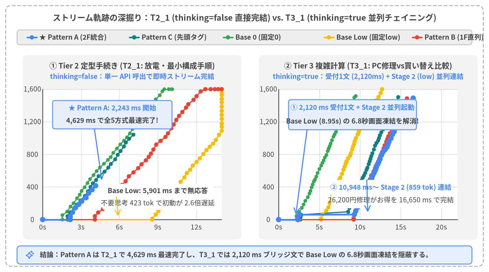
Source Code
from drawlib.canvas import save, setup
from drawlib.icons import phosphor
from drawlib.lines import line
from drawlib.shapes import circle, rectangle
from drawlib.styles import Styles
from drawlib.text import text
from drawlib.utils import load_adaptive_trajectory
setup(width=172, height=96, dpi=150)
# Outer structural frame
rectangle((86.0, 48.0), width=168.0, height=92.0, style=Styles.MutedDashed.patch(shape_r=2.0))
text(
(86.0, 89.6),
"ストリーム軌跡の深掘り：T2_1 (thinking=false 直接完結) vs. T3_1 (thinking=true 並列チェイニング)",
style=Styles.DarkBold.patch(text_size=12.0),
)
# Shared Legend Bar
rectangle((86.0, 82.8), width=160.0, height=5.2, style=Styles.Neutral.patch(shape_r=1.0))
leg_items = [
(9.5, Styles.PrimaryBold, Styles.PrimaryFlat, "★ Pattern A (2F統合)"),
(45.5, Styles.TealBold, Styles.TealFlat, "Pattern C (先頭タグ)"),
(78.5, Styles.SuccessBold, Styles.SuccessFlat, "Base 0 (固定0)"),
(114.0, Styles.WarningBold, Styles.WarningFlat, "Base Low (固定low)"),
(145.0, Styles.DangerBold, Styles.DangerFlat, "Pattern B (1F直列)"),
]
for lx, lst, cst, ltxt in leg_items:
line((lx, 82.8), (lx + 3.4, 82.8), style=lst.patch(line_width=2.2))
circle((lx + 1.7, 82.8), radius=0.75, style=cst)
text((lx + 4.3, 82.8), ltxt, style=Styles.DarkBold.patch(text_size=10.0, halign="left"))
def draw_multi_trajectory_panel(
*,
x0: float,
y0: float,
pw: float,
ph: float,
prompt_id: str,
title_s: str,
sub_s: str,
max_t: float,
max_c: float,
x_ticks: list[int],
y_ticks: list[int],
) -> tuple[object, object]:
rectangle((x0 + pw / 2, y0 + ph / 2 + 2.5), width=pw + 14.0, height=ph + 19.0, style=Styles.LightFlat.patch(shape_r=1.6))
text((x0 + pw / 2, y0 + ph + 8.2), title_s, style=Styles.DarkBold.patch(text_size=11.0))
text((x0 + pw / 2, y0 + ph + 4.4), sub_s, style=Styles.PrimaryBold.patch(text_size=10.0))
rectangle((x0 + pw / 2, y0 + ph / 2), width=pw, height=ph, style=Styles.WhiteFlat)
def px(t_ms: float) -> float:
return x0 + min(max(t_ms, 0.0), max_t) / max_t * pw
def py(c_val: float) -> float:
return y0 + min(max(c_val, 0.0), max_c) / max_c * ph
for xt in x_ticks:
tx = px(float(xt))
line((tx, y0), (tx, y0 + ph), style=Styles.LightDashed.patch(line_width=0.7))
text((tx, y0 - 2.6), f"{xt / 1000:.0f}s", style=Styles.Dark.patch(text_size=10.0))
for yt in y_ticks:
ty = py(float(yt))
line((x0, ty), (x0 + pw, ty), style=Styles.LightDashed.patch(line_width=0.7))
text((x0 - 3.6, ty), f"{yt:,}", style=Styles.Dark.patch(text_size=10.0))
line((x0, y0), (x0 + pw, y0), style=Styles.Dark.patch(line_width=1.1))
line((x0, y0), (x0, y0 + ph), style=Styles.Dark.patch(line_width=1.1))
method_styles = [
("base_0", Styles.SuccessBold.patch(line_width=1.6), Styles.SuccessFlat, 0.65),
("pat_c_tag", Styles.TealBold.patch(line_width=1.7), Styles.TealFlat, 0.7),
("base_low", Styles.WarningBold.patch(line_width=1.8), Styles.WarningFlat, 0.75),
("pat_b_pydantic_1f", Styles.DangerBold.patch(line_width=1.8), Styles.DangerFlat, 0.75),
("pat_a_pydantic_2f", Styles.PrimaryBold.patch(line_width=2.5), Styles.PrimaryFlat, 0.95),
]
for m_key, l_st, c_st, rad in method_styles:
tr = load_adaptive_trajectory(prompt_id, m_key)
pts = tr["client_output"]
if len(pts) >= 2:
coords = [(px(float(p["t_ms"])), py(float(p["chars"]))) for p in pts]
for i in range(len(coords) - 1):
line(coords[i], coords[i + 1], style=l_st)
for cx_p, cy_p in coords:
circle((cx_p, cy_p), radius=rad, style=c_st)
return px, py
# Left Panel: T2_1 (Standard Procedure, thinking=false)
px_l, py_l = draw_multi_trajectory_panel(
x0=15.0,
y0=18.5,
pw=63.0,
ph=46.0,
prompt_id="T2_1",
title_s="① Tier 2 定型手続き (T2_1: 放電・最小構成手順)",
sub_s="thinking=false：単一 API 呼出で即時ストリーム完結",
max_t=14000.0,
max_c=1600.0,
x_ticks=[0, 3000, 6000, 9000, 12000],
y_ticks=[0, 400, 800, 1200, 1600],
)
# Callouts inside Left Panel
rectangle((39.5, 55.5), width=42.0, height=10.0, style=Styles.PrimaryNeutral.patch(shape_r=0.9))
text((39.5, 57.8), "★ Pattern A: 2,243 ms 開始", style=Styles.PrimaryBold.patch(text_size=10.0))
text((39.5, 53.4), "4,629 ms で全5方式最速完了!", style=Styles.DarkBold.patch(text_size=10.0))
line((33.2, 50.5), (px_l(4629.0), py_l(482.0)), arrow_head="->", style=Styles.PrimaryBold.patch(line_width=1.5))
rectangle((55.5, 26.5), width=39.0, height=9.2, style=Styles.WhiteFlat.patch(shape_r=0.9, line_width=0.7))
text((55.5, 28.6), "Base Low: 5,901 ms まで無応答", style=Styles.WarningBold.patch(text_size=10.0))
text((55.5, 24.4), "不要思考 423 tok で初動が 2.6倍遅延", style=Styles.Dark.patch(text_size=10.0))
line((41.0, 26.5), (px_l(5901.0), py_l(40.0)), arrow_head="->", style=Styles.WarningBold.patch(line_width=1.4))
# Right Panel: T3_1 (Complex Math, thinking=true)
px_r, py_r = draw_multi_trajectory_panel(
x0=98.0,
y0=18.5,
pw=63.0,
ph=46.0,
prompt_id="T3_1",
title_s="② Tier 3 複雑計算 (T3_1: PC修理vs買い替え比較)",
sub_s="thinking=true：受付1文 (2,120ms) + Stage 2 (low) 並列連結",
max_t=22000.0,
max_c=1600.0,
x_ticks=[0, 5000, 10000, 15000, 20000],
y_ticks=[0, 400, 800, 1200, 1600],
)
# Callouts inside Right Panel
rectangle((124.0, 55.5), width=45.0, height=10.6, style=Styles.PrimaryNeutral.patch(shape_r=0.9))
text((124.0, 58.0), "① 2,120 ms 受付1文 + Stage 2 並列起動", style=Styles.PrimaryBold.patch(text_size=10.0))
text((124.0, 53.2), "Base Low (8.95s) の 6.8秒画面凍結を解消!", style=Styles.DarkBold.patch(text_size=10.0))
line((108.0, 50.2), (px_r(2120.0), py_r(60.0)), arrow_head="->", style=Styles.PrimaryBold.patch(line_width=1.5))
rectangle((137.5, 27.5), width=42.0, height=10.0, style=Styles.WhiteFlat.patch(shape_r=0.9, line_width=0.7))
text((137.5, 29.8), "② 10,948 ms〜 Stage 2 (859 tok) 連結", style=Styles.PrimaryBold.patch(text_size=10.0))
text((137.5, 25.4), "26,200円修理がお得を 16,650 ms で完結", style=Styles.Dark.patch(text_size=10.0))
line((129.0, 32.5), (px_r(10948.0), py_r(90.0)), arrow_head="->", style=Styles.PrimaryBold.patch(line_width=1.5))
# Bottom summary banner
rectangle((86.0, 6.0), width=160.0, height=6.4, style=Styles.PrimaryNeutral.patch(shape_r=1.2))
phosphor.sparkle((10.5, 6.0), width=3.2, style=Styles.PrimaryBold)
text(
(14.0, 6.0),
"結論：Pattern A は T2_1 で 4,629 ms 最速完了し、T3_1 では 2,120 ms ブリッジ文で Base Low の 6.8秒画面凍結を隠蔽する。",
style=Styles.DarkBold.patch(text_size=10.0, halign="left"),
)
save()
図4-4 の軌跡が示す2つの決定的な優位性
- 左パネル
T2_1（thinking=false：電源が入らない時の放電手順）における単一 API 完結と最速完了：- Pattern A（青太線）は
2,068 msで"thinking": falseを確定し、2,243 msから"response"フィールドのストリーミングを開始して4,629 msでストリーム完了 し、全5方式で最も早く回答を完結させている。 - これは Pydantic JSON スキーマによって簡潔で構造化された手順案内（
482 文字）が出力されるためであり、Pattern C（5,914 ms完了）や Base 0（7,610 ms完了）、Base Low（12,158 ms完了）よりも圧倒的に歯切れよく完了する。
- Pattern A（青太線）は
- 右パネル
T3_1（thinking=true：PC修理 vs. 買い替え3年比較）における6.8 秒の画面凍結解消：- Base Low（黄線）は
8,950 msにわたり累積文字数0のまま画面が凍結 し、Pattern B（赤線）はさらに遅い11,226 msまで1文字も表示されない。 - 対して Pattern A（青太線）は、
2,078 msで"thinking": trueを検知した瞬間にバックグラウンドで Stage 2（thinking=low）を非同期起動しつつ、Stage 1 のブリッジメッセージ（59文字）を2,120 msで即座に画面へ表示する。これにより、Base Low と比較して6,830 ms（約6.8 秒）もの無応答フリーズを完全に解消 している。ユーザーがブリッジ文を読んでいる間に Stage 2 が859 トークンの内部推論を終え、10,948 msから本計算のストリームが滑らかに立ち上がって16,650 msに正確な試算結果（修理の方が 26,200 円安い）を完結させている。
- Base Low（黄線）は
4.4 Google AI Studio 実装コードと総合評価スコアカード
Pattern A の Google AI Studio (google-genai) リファレンス実装
google-genai SDK のストリーミング時は chunk.parsed がストリーム途中で常に None となるため、Pydantic v2 標準同梱の pydantic_core.from_json(..., allow_partial="trailing-strings") を用いて不完全な JSON バッファから安全に thinking フラグとエスケープ解決済みの response デルタを抽出する（src/gemini_evaluation/adaptive_thinking.py）。
import asyncio
from collections.abc import AsyncIterator
from contextlib import aclosing
from typing import Any
from google import genai
from google.genai import types
from pydantic import BaseModel
from pydantic_core import from_json
MODEL = "gemini-3.8-flash"
class AdaptiveStreamResponse(BaseModel):
"""Pattern A 用の最小2フィールド構造化ストリーミングスキーマ。"""
thinking: bool # 第1フィールド：約 0.7〜1.1 秒で確定するルーティングフラグ
response: str # 第2フィールド：thinking=False 時は回答全文、True 時は受付1文
def parse_partial_json_dict(raw_buf: str) -> dict[str, Any] | None:
"""ストリーム途中の不完全な JSON を例外なく安全に辞書へ逐次パースする。"""
if not raw_buf:
return None
try:
parsed = from_json(raw_buf.encode("utf-8"), allow_partial="trailing-strings")
return parsed if isinstance(parsed, dict) else None
except ValueError:
return None
async def stream_adaptive_router(
api_key: str,
prompt: str,
) -> AsyncIterator[str]:
"""Pattern A: 2フィールド統合 Pydantic ストリーム + Stage 2 並列チェイニング。"""
client = genai.Client(api_key=api_key)
stage2_queue: asyncio.Queue[str | BaseException | None] = asyncio.Queue()
stage2_task: asyncio.Task[None] | None = None
async def _produce_stage2() -> None:
try:
st2 = await client.aio.models.generate_content_stream(
model=MODEL,
contents=prompt,
config=types.GenerateContentConfig(
system_instruction=(
"冒頭の挨拶や受付文は既に表示済みです。"
"挨拶を繰り返さず、直ちに本題の計算ステップと結論を回答してください。"
),
thinking_config=types.ThinkingConfig(
thinking_level=types.ThinkingLevel.LOW,
),
temperature=0.2,
),
)
async with aclosing(st2):
async for ch2 in st2:
if ch2.text:
await stage2_queue.put(ch2.text)
await stage2_queue.put(None)
except BaseException as exc:
await stage2_queue.put(exc)
json_buf = ""
emitted_len = 0
decided_thinking: bool | None = None
st1 = await client.aio.models.generate_content_stream(
model=MODEL,
contents=prompt,
config=types.GenerateContentConfig(
system_instruction=(
"挨拶や定型手続き案内では thinking: false とし response に回答全文を出力してください。"
"複数条件の数値計算・比較では thinking: true とし response に1文の受付メッセージのみを出力してください。"
),
response_mime_type="application/json",
response_schema=AdaptiveStreamResponse,
thinking_config=types.ThinkingConfig(thinking_budget=0),
temperature=0.2,
),
)
async with aclosing(st1):
async for ch1 in st1:
if not ch1.text:
continue
json_buf += ch1.text
partial = parse_partial_json_dict(json_buf)
if partial is None:
continue
# 1) thinking フラグが確定した瞬間に1度だけ判定し、True なら Stage 2 を並列起動
if decided_thinking is None and isinstance(partial.get("thinking"), bool):
decided_thinking = partial["thinking"]
if decided_thinking:
stage2_task = asyncio.create_task(_produce_stage2())
# 2) response の未送出デルタを即時 yield
resp_so_far = partial.get("response")
if isinstance(resp_so_far, str) and len(resp_so_far) > emitted_len:
delta = resp_so_far[emitted_len:]
emitted_len = len(resp_so_far)
yield delta
# 3) EOF で Pydantic スキーマ完全検証を実行
final_obj = AdaptiveStreamResponse.model_validate_json(json_buf)
if len(final_obj.response) > emitted_len:
yield final_obj.response[emitted_len:]
# 4) thinking=True の場合は並列実行中の Stage 2 ストリームをシームレスに連結
if decided_thinking and stage2_task is not None:
yield "\n\n"
while True:
item = await stage2_queue.get()
if item is None:
break
if isinstance(item, BaseException):
raise item
yield item
await stage2_task
Pydantic スキーマの Cold/Warm 特性とフィールド定義順のベストプラクティス：
load_schema_experiment()（src/gemini_evaluation/adaptive_thinking_log.json）の実測により、未知の JSON スキーマを初回送信した際（Cold#1：AdaptiveStreamResponse2,562 ms、RichStreamResponse3,337 ms）にはサーバー側の制約付きデコード文法（FSM）コンパイルが走るが、2回目以降（Warm#2〜#4）は文法キャッシュが効いて 2フィールド版（TTFT2,294〜3,447 ms・平均2,744 ms）と 6フィールド版（TTFT2,504〜3,259 ms・平均2,837 ms）がほぼ同等の速度で推移することが確認された。分類タグ等を加えた6フィールドのRichStreamResponseでも、thinking: boolを先頭・可変長リストをresponse: strの後ろに配置すれば Warm 時のflag_decided_msは2,157〜2,781 msと劣化しない。本番環境ではコンテナ起動時に1回ダミーウォームアップを実行しておくことで Cold 遅延を完全に排除できる。
全5方式の総合評価スコアカード
| 評価項目 | ★ Pattern A (pat_a_pydantic_2f){thinking, response} 統合 |
Pattern C (pat_c_tag)[DIRECT] / [THINK] タグ |
Pattern B (pat_b_pydantic_1f){thinking} 直列ルーター |
Base Low (base_low)固定 thinking=low |
Base 0 (base_0)固定 thinking=0 |
|---|---|---|---|---|---|
| 全9問平均 TTFT | 2,340 ms (◎ < 2.5s) |
1,879 ms (◎ < 2.5s) |
6,177 ms (× > 3.5s) |
6,290 ms (× > 3.5s) |
1,879 ms (◎ < 2.5s) |
| Tier 1–2 平均 TTFT / 完了 | 2,354 ms / 4,808 ms (最速完了) |
1,920 ms / 5,030 ms |
3,522 ms / 7,760 ms |
4,791 ms / 8,189 ms |
1,887 ms / 5,371 ms |
| Tier 3 平均 TTFT（最大） | 2,314 ms (2,456 ms) |
1,795 ms (1,939 ms) |
11,488 ms (12,590 ms) |
9,289 ms (12,155 ms) |
1,863 ms (2,235 ms) |
| ルーティング正解率 | 9 / 9 (100%) |
9 / 9 (100%) |
9 / 9 (100%) |
固定（常時思考） | 固定（思考なし） |
| Tier 3 複雑計算検証 | 3 / 3 (100% 事前検算) |
3 / 3 (100% 事前検算) |
3 / 3 (100% 事前検算) |
3 / 3 (100% 事前検算) |
自己回帰リスク（事前検算なし） |
| API 呼び出し回数 (T1–2 / T3) | 1.0 回 / 2.0 回 |
1.0 回 / 2.0 回 |
2.0 回 / 2.0 回 |
1.0 回 / 1.0 回 |
1.0 回 / 1.0 回 |
| デコーダ層の型保証・拡張性 | ◎（Constrained Decoding） | ×（タグ露出・履歴ドリフト懸念） | △（ルーターのみ型保証） | －（平文） | －（平文） |
| 総合判定 | ★ 本番標準採用（推奨） | 不採用（型安全性ゆえAへ統一） | 不採用（直列2回遅延） | 非推奨（最大 12.2s 凍結） |
不採用（複雑計算リスク） |
5. マルチターンチャットでの挙動とコンテキストキャッシュ
実運用の対話型AIアプリケーション（パソコンのトラブルシューティング窓口やテクニカルサポート等）では、単発プロンプトではなく数十ターンにわたる連続対話が行われる。本章では、Google AI Studio（google-genai SDK / gemini-3.8-flash）における パソコンが動かなくなったシナリオでの顧客とサポート窓口の50ターン連続チャットベンチマーク（src/gemini_evaluation/benchmark_multiturn_chat.py / multiturn_chat_log.json）の実測データ（全50ターン × 4条件 ＝ 計200実行）に基づき、会話履歴の肥大化（176 → 21,490 prompt_tokens、累計 42,281 文字）に対するレイテンシ推移と、設定不要で自動発動する 暗黙的コンテキストキャッシュ（Implicit Context Caching：cached_content_token_count） の実効性を定量的に解明する。
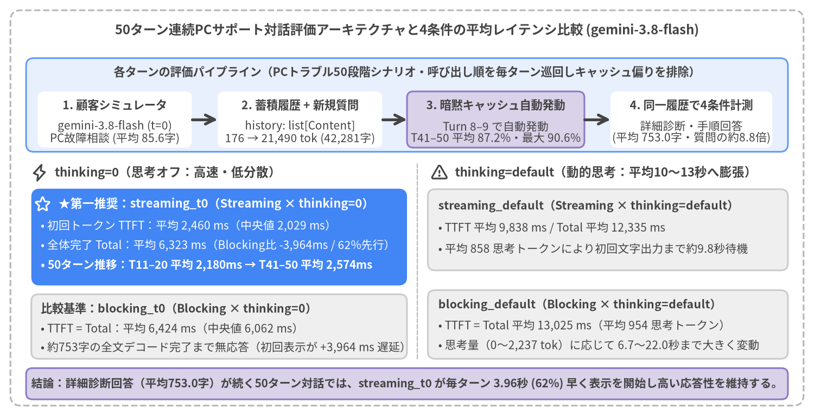
Source Code
from drawlib.canvas import save, setup
from drawlib.icons import phosphor
from drawlib.lines import line
from drawlib.shapes import rectangle
from drawlib.styles import Styles
from drawlib.text import text
setup(width=156, height=80, dpi=150)
# Outer structural frame
rectangle((78, 40), width=152, height=76, style=Styles.MutedDashed.patch(shape_r=2.0))
text(
(78, 74.2),
"50ターン連続PCサポート対話評価アーキテクチャと4条件の平均レイテンシ比較 (gemini-3.8-flash)",
style=Styles.DarkBold.patch(text_size=11.5),
)
# Top pipeline band: 50-Turn Evaluation Loop
rectangle((78, 59.8), width=146, height=18.0, style=Styles.PrimaryNeutral.patch(shape_r=1.5))
text(
(78, 66.2),
"各ターンの評価パイプライン（PCトラブル50段階シナリオ・呼び出し順を毎ターン巡回しキャッシュ偏りを排除）",
style=Styles.DarkBold.patch(text_size=10.2),
)
loop_steps = [
(22.0, 29.5, "1. 顧客シミュレータ", "gemini-3.8-flash (t=0)\nPC故障相談 (平均 85.6字)", Styles.WhiteFlat),
(57.5, 31.5, "2. 蓄積履歴 + 新規質問", "history: list[Content]\n176 → 21,490 tok (42,281字)", Styles.WhiteFlat),
(95.0, 34.0, "3. 暗黙キャッシュ自動発動", "Turn 8–9 で自動発動\nT41–50 平均 87.2%・最大 90.6%", Styles.SecondaryNeutral),
(132.5, 31.0, "4. 同一履歴で4条件計測", "詳細診断・手順回答\n(平均 753.0字・質問の約8.8倍)", Styles.WhiteFlat),
]
for cx, w, st_top, st_bot, box_st in loop_steps:
rectangle((cx, 57.0), width=w, height=10.8, style=box_st.patch(shape_r=1.2, line_width=0.8))
text((cx, 59.8), st_top, style=Styles.DarkBold.patch(text_size=10.2))
text((cx, 54.6), st_bot, style=Styles.Dark.patch(text_size=10.0))
line((36.8, 57.0), (41.7, 57.0), arrow_head="->", style=Styles.DarkBold)
line((73.3, 57.0), (78.0, 57.0), arrow_head="->", style=Styles.DarkBold)
line((112.0, 57.0), (117.0, 57.0), arrow_head="->", style=Styles.DarkBold)
# Left Column: thinking=0 (Fast & Deterministic)
phosphor.lightning((7.5, 46.8), width=3.4, style=Styles.DarkBold)
text(
(10.5, 46.8),
"thinking=0（思考オフ：高速・低分散）",
style=Styles.DarkBold.patch(text_size=10.8, halign="left"),
)
# Focal Card: streaming_t0
rectangle((42.0, 34.4), width=72.0, height=18.6, style=Styles.PrimaryFlat.patch(shape_r=1.6))
phosphor.star((8.2, 40.8), width=3.2, style=Styles.WhiteBold)
text(
(11.2, 40.8),
"★第一推奨：streaming_t0（Streaming × thinking=0）",
style=Styles.WhiteBold.patch(text_size=10.5, halign="left"),
)
text(
(7.8, 36.6),
"• 初回トークン TTFT：平均 2,460 ms（中央値 2,029 ms）",
style=Styles.White.patch(text_size=10.0, halign="left"),
)
text(
(7.8, 32.8),
"• 全体完了 Total：平均 6,323 ms（Blocking比 -3,964ms / 62%先行）",
style=Styles.White.patch(text_size=10.0, halign="left"),
)
text(
(7.8, 29.0),
"• 50ターン推移：T11–20 平均 2,180ms → T41–50 平均 2,574ms",
style=Styles.WhiteBold.patch(text_size=10.0, halign="left"),
)
# Secondary Card: blocking_t0
rectangle((42.0, 17.2), width=72.0, height=12.4, style=Styles.Neutral.patch(shape_r=1.4))
text(
(7.8, 20.6),
"比較基準：blocking_t0（Blocking × thinking=0）",
style=Styles.DarkBold.patch(text_size=10.2, halign="left"),
)
text(
(7.8, 16.8),
"• TTFT = Total：平均 6,424 ms（中央値 6,062 ms）",
style=Styles.Dark.patch(text_size=10.0, halign="left"),
)
text(
(7.8, 13.2),
"• 約753字の全文デコード完了まで無応答（初回表示が +3,964 ms 遅延）",
style=Styles.Dark.patch(text_size=10.0, halign="left"),
)
# Vertical divider
line((80.0, 11.0), (80.0, 48.5), style=Styles.MutedDashed.patch(line_width=1.0))
# Right Column: thinking=default (Dynamic Thinking Inflation)
phosphor.warning((84.2, 46.8), width=3.4, style=Styles.DarkBold)
text(
(87.2, 46.8),
"thinking=default（動的思考：平均10〜13秒へ膨張）",
style=Styles.DarkBold.patch(text_size=10.8, halign="left"),
)
# Card: streaming_default
rectangle((116.5, 35.8), width=69.0, height=15.6, style=Styles.Neutral.patch(shape_r=1.4))
text(
(84.0, 40.4),
"streaming_default（Streaming × thinking=default）",
style=Styles.DarkBold.patch(text_size=10.2, halign="left"),
)
text(
(84.0, 36.2),
"• TTFT 平均 9,838 ms / Total 平均 12,335 ms",
style=Styles.Dark.patch(text_size=10.0, halign="left"),
)
text(
(84.0, 32.2),
"• 平均 858 思考トークンにより初回文字出力まで約9.8秒待機",
style=Styles.Dark.patch(text_size=10.0, halign="left"),
)
# Card: blocking_default
rectangle((116.5, 17.6), width=69.0, height=13.2, style=Styles.Neutral.patch(shape_r=1.4))
text(
(84.0, 21.4),
"blocking_default（Blocking × thinking=default）",
style=Styles.DarkBold.patch(text_size=10.2, halign="left"),
)
text(
(84.0, 17.4),
"• TTFT = Total 平均 13,025 ms（平均 954 思考トークン）",
style=Styles.Dark.patch(text_size=10.0, halign="left"),
)
text(
(84.0, 13.6),
"• 思考量（0〜2,237 tok）に応じて 6.7〜22.0秒まで大きく変動",
style=Styles.Dark.patch(text_size=10.0, halign="left"),
)
# Bottom architectural insight banner
rectangle((78.0, 6.2), width=146.0, height=6.0, style=Styles.SecondaryNeutral.patch(shape_r=1.2))
text(
(78.0, 6.2),
"結論：詳細診断回答（平均753.0字）が続く50ターン対話では、streaming_t0 が毎ターン 3.96秒 (62%) 早く表示を開始し高い応答性を維持する。",
style=Styles.DarkBold.patch(text_size=10.0),
)
save()
5.1 50ターン連続PCサポートチャットベンチマークの設計と評価手法
1. google-genai におけるマルチターン履歴送信の構造
ステートレスな LLM API でマルチターン対話を実装する場合、アプリケーション側で過去の対話履歴 history: list[types.Content]（role="user" および role="model" の交互配列）を保持し、毎ターンのリクエスト時に過去の全履歴リストの末尾へ新規ユーザー発言を結合して contents へ渡す構造となる（src/gemini_evaluation/llm_call.py）。
from google import genai
from google.genai import types
client = genai.Client(api_key=GEMINI_KEY)
# 過去の累積履歴 history: list[types.Content] の末尾に当ターンの新規質問を追加して送信
contents: list[types.Content] = [
*history,
types.Content(role="user", parts=[types.Part.from_text(text=user_prompt)]),
]
response_stream = await client.aio.models.generate_content_stream(
model="gemini-3.8-flash",
contents=contents,
config=types.GenerateContentConfig(
system_instruction=AGENT_SYSTEM_INSTRUCTION,
thinking_config=types.ThinkingConfig(thinking_budget=0),
temperature=0.2,
),
)
この構造では、ターンが進むにつれて毎回のリクエストに含まれる prompt_token_count が単調増加する。そこで本ベンチマーク（src/gemini_evaluation/benchmark_multiturn_chat.py）では、「パソコンが突然動かなくなった顧客とテクニカルサポート窓口の段階的トラブルシューティング会話」 を模した以下の非対称設計で 50ターン連続計測 を実施した。
- 顧客シミュレータ（User Simulator：
gemini-3.8-flash,thinking=0）： パソコンが起動しない初期症状（Turn 1–10：電源・ACアダプタ・放電・BIOS確認・セーフモード起動）から、データ退避と原因切り分け（Turn 11–20：USBバックアップ・ドライバ・sfc /scannow・クリーンブート・メモリ診断）、OS復旧試行（Turn 21–30：S.M.A.R.T.確認・イベントビューアー・システムの復元・回復ドライブ・USBブート）、修理手続きと保証確認（Turn 31–45：BitLocker回復キー・メーカー診断エラー・自然故障保証・引取修理梱包・代替機レンタル・出張修理・下取り買い替え）、修理後のデータ復元と再発防止策（Turn 46–50：返却後チェック・ウイルススキャン・イメージバックアップ・クラウド同期・日常メンテナンス）に至る50段階の連続シナリオに沿って、70〜100文字程度の自然な顧客質問（実測平均85.6 文字）を毎ターン生成する。 - PCサポートエージェント（Agent：
gemini-3.8-flash）： 蓄積された会話履歴historyを踏まえ、確認手順・判断基準・安全上の注意点を含む丁寧なサポート回答（実測平均753.0 文字、顧客質問の 約8.8倍 の文量）を生成する。 - 同一履歴に対する4条件の巡回計測（
rot = (turn - 1) % 4）： Turn 1（176 prompt_tokens）から Turn 50（21,490 prompt_tokens、履歴累計42,281 文字）までの各ターンにおいて、まったく同一のhistoryと新規質問に対して以下の4条件を順次実行し、コンテキストキャッシュのウォームアップ順序によるバイアスを排除するため呼び出し順を毎ターン巡回した。
| 検証バリアント | 呼び出し API メソッド | ThinkingConfig 設定 |
初回応答 TTFT 平均（中央値） |
全体完了 Total 平均 |
平均思考トークン数 | 特徴・位置づけ |
|---|---|---|---|---|---|---|
streaming_t0 |
generate_content_stream |
thinking_budget=0 |
2,460 ms (2,029 ms) |
6,323 ms |
19 tok (T2–50: 0) |
★第一推奨：毎ターン 3,964 ms (3.96秒 / 62%) 早く表示開始 |
blocking_t0 |
generate_content |
thinking_budget=0 |
6,424 ms (6,062 ms) |
6,424 ms |
0 tok |
約753字の全文生成完了まで待機（TTFT = Total） |
streaming_default |
generate_content_stream |
デフォルト（動的思考） | 9,838 ms (10,500 ms) |
12,335 ms |
858 tok |
内部思考完了まで約9.8秒ストリーム停止 |
blocking_default |
generate_content |
デフォルト（動的思考） | 13,025 ms (12,548 ms) |
13,025 ms |
954 tok |
内部思考＋全文生成完了まで約13.0秒待機 |
5.2 入力トークン数の直線的増加と暗黙的コンテキストキャッシュ（Implicit Context Caching）の自動発動
50ターンの連続対話において、各ターン完了後に (user, model) の2メッセージを history に追加していくと、エージェントへの入力トークン数（prompt_token_count）は 1ターンあたり平均 +435 tokens のペースで直線的に増加する（Turn 1 で 176 tokens → Turn 8 で 2,686 tokens → Turn 25 で 10,060 tokens → Turn 50 で 21,490 tokens）。
本検証における最も重要な発見は、入力コンテキストが約 2,600〜3,000 tokens を超えた Turn 8〜9 において、明示的なキャッシュ作成 API を一切呼び出していないにもかかわらず、Gemini 3.8 Flash の暗黙的コンテキストキャッシュ（Implicit Context Caching：usage_metadata.cached_content_token_count）が自動的に発動し、Turn 50 まで毎ターン連続してキャッシュ境界が自動拡張された 点である。
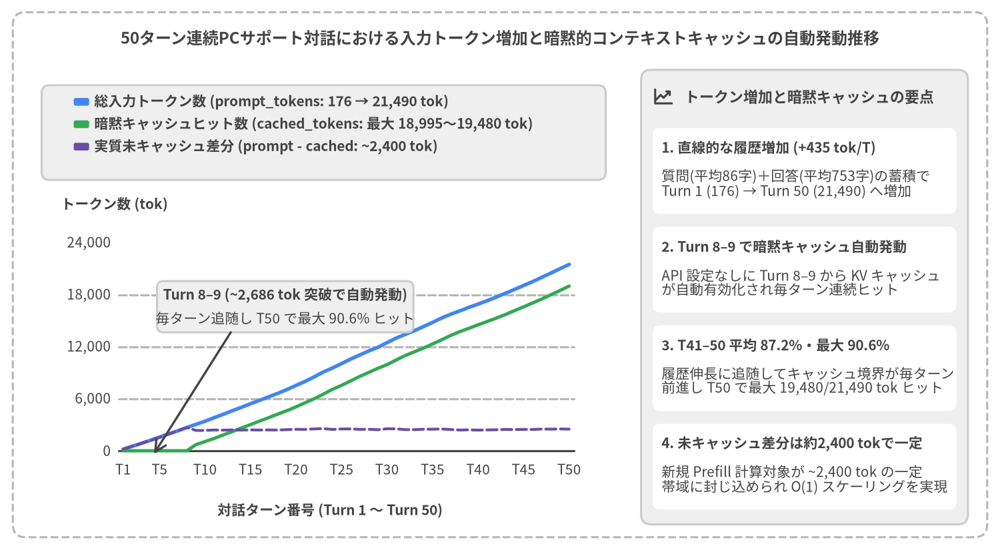
Source Code
from drawlib.canvas import save, setup
from drawlib.charts.line import LineChart
from drawlib.icons import phosphor
from drawlib.lines import line
from drawlib.shapes import rectangle
from drawlib.styles import Styles
from drawlib.text import text
from drawlib.utils import load_multiturn_turns
setup(width=156, height=86, dpi=150)
# Outer structural frame
rectangle((78.0, 43.0), width=152.0, height=82.0, style=Styles.MutedDashed.patch(shape_r=2.0))
text(
(78.0, 80.0),
"50ターン連続PCサポート対話における入力トークン増加と暗黙的コンテキストキャッシュの自動発動推移",
style=Styles.DarkBold.patch(text_size=11.5),
)
# Load 50-turn token & implicit cache metrics dynamically from benchmark JSONL
turns = load_multiturn_turns()
categories = [
f"T{t}" if t in {1, 5, 10, 15, 20, 25, 30, 35, 40, 45, 50} else ""
for t in range(1, 51)
]
prompt_vals = [float(t["variants"]["streaming_t0"]["prompt_tokens"]) for t in turns]
cached_vals = [float(t["variants"]["streaming_t0"]["cached_tokens"]) for t in turns]
uncached_vals = [p - c for p, c in zip(prompt_vals, cached_vals)]
# Left Card: LineChart container
rectangle(
(50.5, 39.5),
width=93.0,
height=71.0,
style=Styles.WhiteFlat.patch(shape_r=1.6, line_width=0.9),
)
# Legend backdrop band at top of left card
rectangle((50.5, 65.2), width=88.0, height=14.8, style=Styles.Neutral.patch(shape_r=1.2))
chart = LineChart(
axis_line_style=Styles.Dark,
categories=categories,
width=84.0,
height=42.5,
smooth=False,
show_points=False,
axis_text_style=Styles.Dark.patch(text_size=10.0),
grid_style=Styles.MutedDashed,
)
chart.add_series(
"総入力トークン数 (prompt_tokens: 176 → 21,490 tok)",
prompt_vals,
style=Styles.PrimaryFlat,
line_width=2.6,
point_shape="none",
)
chart.add_series(
"暗黙キャッシュヒット数 (cached_tokens: 最大 18,995〜19,480 tok)",
cached_vals,
style=Styles.SuccessFlat,
line_width=2.4,
point_shape="none",
)
chart.add_series(
"実質未キャッシュ差分 (prompt - cached: ~2,400 tok)",
uncached_vals,
style=Styles.SecondaryFlat,
line_width=2.0,
line_style="dashed",
point_shape="none",
)
chart.configure_y_axis(
min_value=0.0,
max_value=24000.0,
tick_step=6000.0,
format="{:,.0f}",
)
chart.draw(xy=(8.5, 9.5))
chart.draw_legend(
xy=(11.5, 70.0),
text_style=Styles.DarkBold.patch(text_size=10.0),
orientation="vertical",
item_gap=1.3,
)
# Axis labels
text((9.5, 54.0), "トークン数 (tok)", style=Styles.DarkBold.patch(text_size=10.0, halign="left"))
text((51.5, 6.2), "対話ターン番号 (Turn 1 〜 Turn 50)", style=Styles.DarkBold.patch(text_size=10.0))
# Callout annotation inside chart pointing to Turn 8-9 cache activation
rectangle((44.5, 38.0), width=40.0, height=8.0, style=Styles.Neutral.patch(shape_r=1.0))
text(
(44.5, 39.8),
"Turn 8–9 (~2,686 tok 突破で自動発動)",
style=Styles.DarkBold.patch(text_size=10.0),
)
text(
(44.5, 36.2),
"毎ターン追随し T50 で最大 90.6% ヒット",
style=Styles.Dark.patch(text_size=10.0),
)
line((36.0, 34.0), (24.0, 15.0), arrow_head="->", style=Styles.DarkBold.patch(line_width=1.6))
# Right Panel: Neutral Summary Card Panel
rectangle((125.5, 39.5), width=51.0, height=71.0, style=Styles.Neutral.patch(shape_r=1.6))
phosphor.chart_line_up((103.5, 70.8), width=3.4, style=Styles.DarkBold)
text(
(106.8, 70.8),
"トークン増加と暗黙キャッシュの要点",
style=Styles.DarkBold.patch(text_size=10.5, halign="left"),
)
summary_cards = [
(
59.2,
"1. 直線的な履歴増加 (+435 tok/T)",
"質問(平均86字)＋回答(平均753字)の蓄積で\nTurn 1 (176) → Turn 50 (21,490) へ増加",
),
(
43.8,
"2. Turn 8–9 で暗黙キャッシュ自動発動",
"API 設定なしに Turn 8–9 から KV キャッシュ\nが自動有効化され毎ターン連続ヒット",
),
(
28.4,
"3. T41–50 平均 87.2%・最大 90.6%",
"履歴伸長に追随してキャッシュ境界が毎ターン\n前進し T50 で最大 19,480/21,490 tok ヒット",
),
(
13.0,
"4. 未キャッシュ差分は約2,400 tokで一定",
"新規 Prefill 計算対象が ~2,400 tok の一定\n帯域に封じ込められ O(1) スケーリングを実現",
),
]
for cy, hdr, body in summary_cards:
rectangle((125.5, cy), width=47.4, height=13.4, style=Styles.WhiteFlat.patch(shape_r=1.2, line_width=0.7))
text((103.2, cy + 3.6), hdr, style=Styles.DarkBold.patch(text_size=10.0, halign="left"))
text((103.2, cy - 2.0), body, style=Styles.Dark.patch(text_size=10.0, halign="left"))
save()
図5-2 から導かれる暗黙的コンテキストキャッシュの挙動メカニズム
- Turn 8〜9 におけるゼロ設定発動：
Turn 1〜7（
176〜2,298 prompt_tokens）ではcached_content_token_count = 0であったが、入力が2,686 tokensに達した Turn 8（blocking_t0で703 cached_tokens）および Turn 9（3,045 tokens、streaming_t0で704 cached_tokens・blocking_t0で1,060 cached_tokens）において、バックエンドで KV キャッシュが自動生成された。 - 毎ターンの連続的なプレフィックス拡張：
Turn 9 以降、会話履歴が伸びるにつれてキャッシュヒット数は Turn 10（
1,061 tok）→ Turn 20（5,064 tok）→ Turn 30（9,935 tok）→ Turn 40（14,533 tok）→ Turn 50（streaming_t0で18,995 tok[88.4%]、blocking_t0で19,480 tok[90.6%]）と毎ターン滑らかに自動更新された。その結果、Turn 41〜50 の平均キャッシュヒット率は87.2%（streaming_t0基準）、ピーク時は90.6%に達している。 - 実質未キャッシュ差分（Uncached Delta）の一定化：
図5-2の紫破線が示す通り、毎ターン新たに Prefill 計算が必要となる未キャッシュトークン数（
prompt_tokens - cached_tokens）は、Turn 9 以降約 2,340〜2,540 tokens（blocking_t0では約 1,980〜2,010 tokens） の極めてフラットな一定幅に完全に封じ込められている。
5.3 50ターンにわたるレイテンシ推移とスケーリング特性
暗黙的コンテキストキャッシュが過去の履歴トークンの 85〜90% 以上の KV キャッシュを再利用するため、streaming_t0（Streaming × thinking=0）の初回応答時間（TTFT）は履歴が 21,490 tokens まで膨らんでも約 2.0〜2.5 秒 の安定した帯域を維持する。具体的には、ウォームアップ後の Turn 11〜20 平均 2,180 ms から Turn 41〜50 平均 2,574 ms への推移（+13,700 tokens の増加に対してわずか +394 ms、傾き +29 ms / 1,000 input tokens）に留まっている。
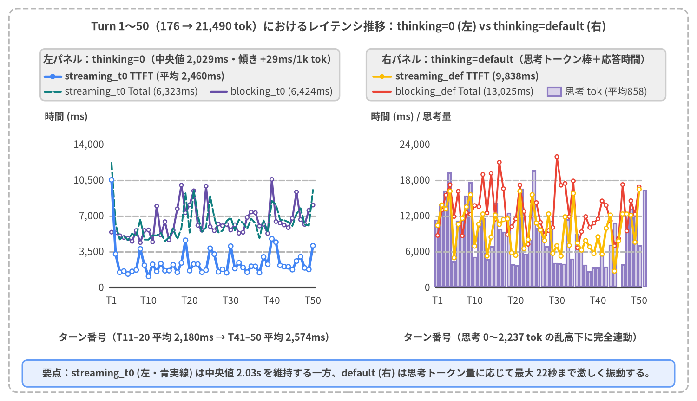
Source Code
from drawlib.canvas import save, setup
from drawlib.charts.line import LineChart
from drawlib.lines import line
from drawlib.shapes import circle, rectangle
from drawlib.styles import Styles
from drawlib.text import text
from drawlib.utils import load_multiturn_turns
setup(width=156, height=90, dpi=150)
# Outer structural frame
rectangle((78.0, 45.0), width=152.0, height=86.0, style=Styles.MutedDashed.patch(shape_r=2.0))
text(
(78.0, 84.0),
"Turn 1〜50（176 → 21,490 tok）におけるレイテンシ推移：thinking=0 (左) vs thinking=default (右)",
style=Styles.DarkBold.patch(text_size=11.5),
)
turns = load_multiturn_turns()
labeled_turns = {1, 10, 20, 30, 40, 50}
categories = [f"T{t['turn']}" if int(t["turn"]) in labeled_turns else "" for t in turns]
s0_ttft = [float(t["variants"]["streaming_t0"]["ttft_ms"]) for t in turns]
s0_total = [float(t["variants"]["streaming_t0"]["total_ms"]) for t in turns]
b0_total = [float(t["variants"]["blocking_t0"]["total_ms"]) for t in turns]
sd_ttft = [float(t["variants"]["streaming_default"]["ttft_ms"]) for t in turns]
bd_total = [float(t["variants"]["blocking_default"]["total_ms"]) for t in turns]
sd_th_tok = [float(t["variants"]["streaming_default"]["thoughts_tokens"]) for t in turns]
# =========================================================================
# Left Panel: thinking=0 (Flat scaling)
# =========================================================================
rectangle((42.5, 45.5), width=71.0, height=69.0, style=Styles.WhiteFlat.patch(shape_r=1.5, line_width=0.8))
rectangle((42.5, 73.2), width=67.0, height=11.6, style=Styles.Neutral.patch(shape_r=1.1))
text(
(42.5, 76.6),
"左パネル：thinking=0（中央値 2,029ms・傾き +29ms/1k tok）",
style=Styles.DarkBold.patch(text_size=10.2),
)
# Legend for Left Panel
line((10.0, 72.8), (13.6, 72.8), style=Styles.PrimaryBold.patch(line_width=2.6))
circle((11.8, 72.8), radius=0.6, style=Styles.PrimaryFlat)
text((14.5, 72.8), "streaming_t0 TTFT (平均 2,460ms)", style=Styles.DarkBold.patch(text_size=10.0, halign="left"))
line((10.0, 69.4), (13.6, 69.4), style=Styles.TealDashed.patch(line_width=1.9))
text((14.5, 69.4), "streaming_t0 Total (6,323ms)", style=Styles.Dark.patch(text_size=10.0, halign="left"))
line((47.2, 69.4), (50.8, 69.4), style=Styles.SecondaryBold.patch(line_width=2.1))
text((51.6, 69.4), "blocking_t0 (6,424ms)", style=Styles.Dark.patch(text_size=10.0, halign="left"))
chart_left = LineChart(
axis_line_style=Styles.Dark,
axis_text_style=Styles.Dark.patch(text_size=10.0),
grid_style=Styles.MutedDashed,
categories=categories,
width=59.0,
height=42.0,
show_points=True,
point_shape="circle",
point_size=0.45,
)
chart_left.configure_x_axis(show_grid=False)
chart_left.configure_y_axis(
min_value=0,
max_value=14000,
tick_step=3500,
format="{:,.0f}",
)
chart_left.add_series(
name="blocking_t0 Total",
values=b0_total,
style=Styles.SecondaryFlat,
line_width=2.0,
point_size=0.4,
)
chart_left.add_series(
name="streaming_t0 Total",
values=s0_total,
style=Styles.TealFlat,
line_width=1.8,
line_style="dashed",
point_shape="none",
)
chart_left.add_series(
name="streaming_t0 TTFT",
values=s0_ttft,
style=Styles.PrimaryFlat,
line_width=2.6,
point_size=0.5,
)
chart_left.draw(xy=(14.5, 19.5))
text((10.0, 63.8), "時間 (ms)", style=Styles.DarkBold.patch(text_size=10.0, halign="left"))
text((44.0, 14.2), "ターン番号（T11–20 平均 2,180ms → T41–50 平均 2,574ms）", style=Styles.DarkBold.patch(text_size=10.0))
# =========================================================================
# Right Panel: thinking=default (Latency + Thinking Token Bars)
# =========================================================================
rectangle((115.5, 45.5), width=71.0, height=69.0, style=Styles.WhiteFlat.patch(shape_r=1.5, line_width=0.8))
rectangle((115.5, 73.2), width=67.0, height=11.6, style=Styles.Neutral.patch(shape_r=1.1))
text(
(115.5, 76.6),
"右パネル：thinking=default（思考トークン棒＋応答時間）",
style=Styles.DarkBold.patch(text_size=10.2),
)
# Legend for Right Panel
line((83.5, 72.8), (87.5, 72.8), style=Styles.WarningBold.patch(line_width=2.2))
circle((85.5, 72.8), radius=0.55, style=Styles.WarningFlat)
text((88.5, 72.8), "streaming_def TTFT (9,838ms)", style=Styles.DarkBold.patch(text_size=10.0, halign="left"))
line((83.5, 69.4), (87.5, 69.4), style=Styles.DangerBold.patch(line_width=2.0))
text((88.5, 69.4), "blocking_def Total (13,025ms)", style=Styles.Dark.patch(text_size=10.0, halign="left"))
rectangle((124.0, 69.4), width=3.0, height=2.0, style=Styles.SecondaryNeutral.patch(line_width=0.6))
text((126.5, 69.4), "思考 tok (平均858)", style=Styles.Dark.patch(text_size=10.0, halign="left"))
# Draw Thinking Token vertical bars strictly inside the inner plot area (x: 97.7..144.2, y0: 25.8)
rx0, ry0, rpw, rph = 87.5, 19.5, 59.0, 42.0
inner_x0, inner_x1, inner_y0, inner_h = 97.7, 144.2, 25.8, 32.5
for idx, th_val in enumerate(sd_th_tok):
bx = inner_x0 + (idx / max(len(sd_th_tok) - 1, 1)) * (inner_x1 - inner_x0)
bh = min(th_val / 2400.0, 1.0) * inner_h
if bh > 0.2:
rectangle(
(bx, inner_y0 + bh / 2.0),
width=0.62,
height=bh,
style=Styles.SecondaryNeutral.patch(line_width=0.3, shape_r=0),
)
chart_right = LineChart(
axis_line_style=Styles.Dark,
axis_text_style=Styles.Dark.patch(text_size=10.0),
grid_style=Styles.MutedDashed,
categories=categories,
width=rpw,
height=rph,
show_points=True,
point_shape="circle",
point_size=0.45,
)
chart_right.configure_x_axis(show_grid=False)
chart_right.configure_y_axis(
min_value=0,
max_value=24000,
tick_step=6000,
format="{:,.0f}",
)
chart_right.add_series(
name="blocking_default Total",
values=bd_total,
style=Styles.DangerFlat,
line_width=1.8,
point_size=0.4,
)
chart_right.add_series(
name="streaming_default TTFT",
values=sd_ttft,
style=Styles.WarningFlat,
line_width=2.2,
point_size=0.45,
)
chart_right.draw(xy=(rx0, ry0))
text((83.0, 63.8), "時間 (ms) / 思考量", style=Styles.DarkBold.patch(text_size=10.0, halign="left"))
text((117.0, 14.2), "ターン番号（思考 0〜2,237 tok の乱高下に完全連動）", style=Styles.DarkBold.patch(text_size=10.0))
# Bottom callout bar
rectangle((78.0, 6.2), width=146.0, height=6.0, style=Styles.PrimaryNeutral.patch(shape_r=1.2))
text(
(78.0, 6.2),
"要点：streaming_t0 (左・青実線) は中央値 2.03s を維持する一方、default (右) は思考トークン量に応じて最大 22秒まで激しく振動する。",
style=Styles.DarkBold.patch(text_size=10.0),
)
save()
図5-3 の左右比較から読み取れる重要事実
- 左パネル（
thinking=0）：Turn 50 まで中央値2.03 秒の初回応答を維持する安定性：- 青実線（
streaming_t0 TTFT）は初回 Turn 1 のコールドスタートを除き1,082〜4,761 ms（全50ターン平均2,460 ms、Turn 2〜50 平均2,295 ms、中央値2,029 ms）の安定した帯域に収まり、紫実線（blocking_t0 Total=TTFT、平均6,424 ms）の常に3,964 ms（3.96秒/62%）下側 を平行に推移している。 - さらに緑破線（
streaming_t0 Total、平均6,323 ms）はblocking_t0（6,424 ms）とほぼ完全に重なっており、ストリーミング化に伴う全体完了時間のオーバーヘッドはゼロである。
- 青実線（
- 右パネル（
thinking=default）：ターン番号ではなく思考トークン量に支配される乱高下：thinking=defaultでは、各ターンのPCトラブル相談内容に対するモデルの動的判断によってthoughts_token_count（背景の縦棒）が平均858〜954 tokens（範囲0〜2,237 tokens）の間で激しく変動する。- ストリーミング（
streaming_default）であっても、内部思考が完了するまで1文字目の可視テキストチャンクが送出されないため、平均 TTFT は9,838 msに膨張し、ストリーミング本来の体感速度優位性が思考待機時間に埋没してしまう。
5.4 内部思考トークンの変動分析と 2D ストリーム軌跡スナップショット（Turn 1 vs Turn 25 vs Turn 50）
thinking=default におけるレイテンシ変動の正体と、会話序盤（Turn 1）・中盤（Turn 25）・終盤（Turn 50）におけるチャンク送出軌跡の違いを同時検証するため、図5-4の左パネルに thinking=default 全100実行（50ターン × 2モード）の thoughts_tokens 対 total_ms 散布図 を、右パネルに load_multiturn_trajectory() から抽出した Turn 1・Turn 25・Turn 50 の3ターン軌跡オーバーレイ を示す。
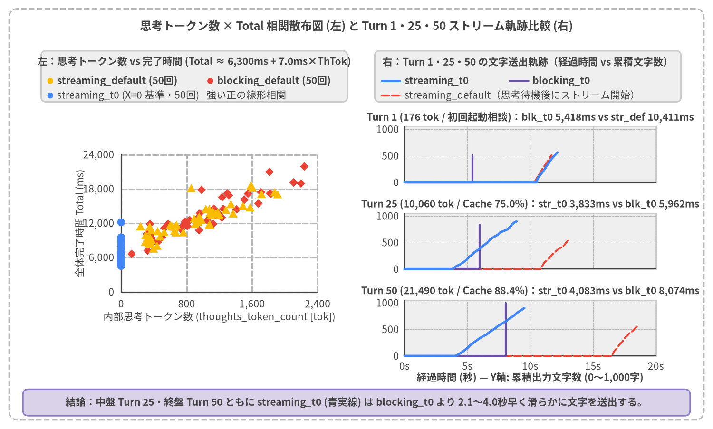
Source Code
from drawlib.canvas import save, setup
from drawlib.charts.scatter import ScatterChart
from drawlib.lines import line, lines
from drawlib.shapes import circle, rectangle
from drawlib.styles import Styles
from drawlib.text import text
from drawlib.utils import load_multiturn_trajectory, load_multiturn_turns
setup(width=156, height=94, dpi=150)
# Outer structural frame
rectangle((78.0, 47.0), width=152.0, height=90.0, style=Styles.MutedDashed.patch(shape_r=2.0))
text(
(78.0, 88.2),
"思考トークン数 × Total 相関散布図 (左) と Turn 1・25・50 ストリーム軌跡比較 (右)",
style=Styles.DarkBold.patch(text_size=11.5),
)
# =========================================================================
# Left Panel: Scatter plot of thoughts_tokens vs total_ms (100 default runs + t=0 ref)
# =========================================================================
rectangle((42.5, 47.5), width=71.0, height=73.0, style=Styles.WhiteFlat.patch(shape_r=1.5, line_width=0.8))
rectangle((42.5, 77.2), width=67.0, height=11.2, style=Styles.Neutral.patch(shape_r=1.1))
text(
(42.5, 80.4),
"左：思考トークン数 vs 完了時間 (Total ≈ 6,300ms + 7.0ms×ThTok)",
style=Styles.DarkBold.patch(text_size=10.0),
)
pts_s_def: list[tuple[float, float]] = []
pts_b_def: list[tuple[float, float]] = []
pts_s_t0: list[tuple[float, float]] = []
for t_rec in load_multiturn_turns():
v = t_rec["variants"]
pts_s_def.append((float(v["streaming_default"]["thoughts_tokens"]), float(v["streaming_default"]["total_ms"])))
pts_b_def.append((float(v["blocking_default"]["thoughts_tokens"]), float(v["blocking_default"]["total_ms"])))
pts_s_t0.append((0.0, float(v["streaming_t0"]["total_ms"])))
# Compact legend inside Left Panel header
circle((11.0, 76.2), radius=0.65, style=Styles.WarningFlat)
text((12.5, 76.2), "streaming_default (50回)", style=Styles.DarkBold.patch(text_size=10.0, halign="left"))
circle((46.0, 76.2), radius=0.65, style=Styles.DangerFlat)
text((47.5, 76.2), "blocking_default (50回)", style=Styles.DarkBold.patch(text_size=10.0, halign="left"))
circle((11.0, 73.0), radius=0.65, style=Styles.PrimaryFlat)
text((12.5, 73.0), "streaming_t0 (X=0 基準・50回) 強い正の線形相関", style=Styles.Dark.patch(text_size=10.0, halign="left"))
scatter = ScatterChart(
axis_line_style=Styles.Dark,
axis_text_style=Styles.Dark.patch(text_size=10.0),
grid_style=Styles.MutedDashed,
width=63.0,
height=46.0,
default_radius=0.85,
)
scatter.configure_x_axis(
label="内部思考トークン数 (thoughts_token_count [tok])",
min_value=0,
max_value=2400,
tick_step=800,
format="{:,.0f}",
)
scatter.configure_y_axis(
label="全体完了時間 Total (ms)",
min_value=0,
max_value=24000,
tick_step=6000,
format="{:,.0f}",
)
scatter.add_series("blocking_default", pts_b_def, style=Styles.DangerFlat, shape="rhombus", radius=0.85)
scatter.add_series("streaming_default", pts_s_def, style=Styles.WarningFlat, shape="triangle", radius=0.9)
scatter.add_series("streaming_t0", pts_s_t0, style=Styles.PrimaryFlat, shape="circle", radius=0.85)
scatter.draw(xy=(11.5, 18.0))
# =========================================================================
# Right Panel: 3-Turn Trajectory Overlay (Turn 1, Turn 25, Turn 50)
# =========================================================================
rectangle((115.5, 47.5), width=71.0, height=73.0, style=Styles.WhiteFlat.patch(shape_r=1.5, line_width=0.8))
rectangle((115.5, 77.2), width=67.0, height=11.2, style=Styles.Neutral.patch(shape_r=1.1))
text(
(115.5, 80.4),
"右：Turn 1・25・50 の文字送出軌跡（経過時間 vs 累積文字数）",
style=Styles.DarkBold.patch(text_size=10.0),
)
# Legend for Right Panel trajectories
line((83.5, 76.2), (87.5, 76.2), style=Styles.PrimaryBold.patch(line_width=2.4))
text((88.5, 76.2), "streaming_t0", style=Styles.DarkBold.patch(text_size=10.0, halign="left"))
line((111.5, 76.2), (115.5, 76.2), style=Styles.SecondaryBold.patch(line_width=2.2))
text((116.5, 76.2), "blocking_t0", style=Styles.DarkBold.patch(text_size=10.0, halign="left"))
line((83.5, 73.0), (87.5, 73.0), style=Styles.DangerDashed.patch(line_width=2.0))
text((88.5, 73.0), "streaming_default（思考待機後にストリーム開始）", style=Styles.Dark.patch(text_size=10.0, halign="left"))
sub_panels = [
(1, 54.0, "Turn 1 (176 tok / 初回起動相談)：blk_t0 5,418ms vs str_def 10,411ms"),
(25, 35.0, "Turn 25 (10,060 tok / Cache 75.0%)：str_t0 3,833ms vs blk_t0 5,962ms"),
(50, 16.0, "Turn 50 (21,490 tok / Cache 88.4%)：str_t0 4,083ms vs blk_t0 8,074ms"),
]
max_t = 20000.0
max_c = 1050.0
pw = 55.0
ph = 12.2
px0 = 88.5
for t_num, py0, sub_title in sub_panels:
text((px0 + pw / 2, py0 + ph + 2.0), sub_title, style=Styles.DarkBold.patch(text_size=10.0))
rectangle((px0 + pw / 2, py0 + ph / 2), width=pw, height=ph, style=Styles.Neutral.patch(line_width=0.5, shape_r=0))
def to_x(ms: float) -> float:
return px0 + min(max(ms, 0.0), max_t) / max_t * pw
def to_y(ch: float, base_y: float = py0) -> float:
return base_y + min(max(ch, 0.0), max_c) / max_c * ph
for xt in (0, 5000, 10000, 15000, 20000):
tx = to_x(float(xt))
line((tx, py0), (tx, py0 + ph), style=Styles.MutedDashed.patch(line_width=0.5))
if t_num == 50:
text((tx, py0 - 2.2), f"{xt // 1000}s", style=Styles.Dark.patch(text_size=10.0))
for yt in (0, 500, 1000):
ty = to_y(float(yt))
line((px0, ty), (px0 + pw, ty), style=Styles.MutedDashed.patch(line_width=0.5))
text((px0 - 1.2, ty), f"{yt}", style=Styles.Dark.patch(text_size=10.0, halign="right"))
line((px0, py0), (px0 + pw, py0), style=Styles.Dark.patch(line_width=1.0))
line((px0, py0), (px0, py0 + ph), style=Styles.Dark.patch(line_width=1.0))
for v_key, st_line in (
("streaming_default", Styles.DangerDashed.patch(line_width=1.9)),
("blocking_t0", Styles.SecondaryBold.patch(line_width=2.0)),
("streaming_t0", Styles.PrimaryBold.patch(line_width=2.4)),
):
tr = load_multiturn_trajectory(t_num, v_key)
gem_pts = tr["timeline_series"].get("gemini", [])
if len(gem_pts) >= 2:
coords = [(to_x(float(p["t_ms"])), to_y(float(p["chars"]))) for p in gem_pts]
lines(coords, style=st_line)
text((px0 + pw / 2, 11.2), "経過時間 (秒) — Y軸: 累積出力文字数 (0〜1,000字)", style=Styles.DarkBold.patch(text_size=10.0))
# Bottom callout bar
rectangle((78.0, 5.8), width=146.0, height=5.8, style=Styles.SecondaryNeutral.patch(shape_r=1.2))
text(
(78.0, 5.8),
"結論：中盤 Turn 25・終盤 Turn 50 ともに streaming_t0 (青実線) は blocking_t0 より 2.1〜4.0秒早く滑らかに文字を送出する。",
style=Styles.DarkBold.patch(text_size=10.0),
)
save()
図5-4 から導かれる2つの定量的結論
- 左パネル：
Total ≈ 6,300 ms + 7.0 ms × ThTokの線形支配則：thinking=defaultの全100実行（50ターン × Streaming / Blocking）をプロットすると、ターン番号（Turn 1 か Turn 50 か）には関係なく、内部思考トークン数ThTok（0〜2,237 tokens）に対して強い正の直線相関を示す。- 切片の約
6,300 msは平均753 文字の詳細なPCサポート回答生成に要するベースデコード時間であり、そこから右上に伸びる最大+15 秒の追加遅延は内部思考トークンの生成コストで説明される。
- 右パネル：Turn 1・Turn 25・Turn 50 を通じたストリーム軌跡の比較：
- Turn 1（
176 tok・キャッシュ0%・電源が入らない初回相談）：初回コールドリクエストを除けば、blocking_t0（紫実線）は5,418 msまで0 文字のまま待機してから505 文字を一括出力し、streaming_default（赤破線）は1,087 思考トークンのため10,411 msまで画面が停止する。 - Turn 25（
10,060 tok・キャッシュ7,547 tok [75.0%]・BIOS/チップセット更新手順）：履歴が57倍以上に増えた中盤でも、streaming_t0（青実線）は3,833 msからストリームを開始し、898 文字を滑らかに出力してblocking_t0（5,962 ms）に対し2,129 ms（36%）早く 初回応答を届けている。 - Turn 50（
21,490 tok・キャッシュ18,995 tok [88.4%]・日常メンテナンス総括）：履歴が122倍に達した最終ターンにおいても、暗黙キャッシュが約19,000 tokensをヒットするため、streaming_t0は4,083 msで初回チャンクを送出し、blocking_t0（8,074 ms）に対して3,991 ms（49%）先行 して902 文字を完走している（一方streaming_defaultは1,584 思考トークンにより16,498 msまで無応答となる）。
- Turn 1（
5.5 10ターン区間別の包括的統計テーブルとマルチターン本番設計ガイドライン
1. 10ターン区間別（Cohort）パフォーマンス集計表
全50ターンを10ターンごとの5コホート（Turns 1–10 〜 Turns 41–50）および全50ターン平均で集計した包括的ベンチマーク結果を下表に示す。
| ターン区間・主な相談トピック | 平均入力 prompt_tokens(最小〜最大) |
平均キャッシュ cached_tokens( streaming_t0 ヒット率) |
streaming_t0TTFT / Total ( ms) |
blocking_t0TTFT = Total ( ms) |
Streaming 先行幅 ( streaming_t0 - blocking_t0) |
streaming_defaultTTFT / Total ( ms) [平均思考 tok] |
blocking_defaultTotal ( ms) [平均思考 tok] |
|---|---|---|---|---|---|---|---|
| Turns 1–10 (電源・放電・BIOS・セーフモード) |
1,768 tok( 176〜3,407) |
177 tok( 10.0%・T8–9発動) |
2,853 / 5,910 ms(T2–10: 2,000 ms) |
5,125 ms |
-2,272 ms (-44.3%) |
11,687 / 13,467 ms[ 1,211 tok] |
12,988 ms[ 1,099 tok] |
| Turns 11–20 (データ退避・ドライバ・メモリ診断) |
5,635 tok( 3,817〜7,539) |
3,229 tok( 57.3%) |
2,180 / 5,586 ms |
6,742 ms |
-4,562 ms (-67.7%) |
9,357 / 11,643 ms[ 828 tok] |
14,398 ms[ 1,154 tok] |
| Turns 21–30 (SSD診断・復元・USB回復メディア) |
10,280 tok( 8,005〜12,478) |
7,784 tok( 75.7%) |
2,361 / 6,804 ms |
6,666 ms |
-4,305 ms (-64.6%) |
9,969 / 12,658 ms[ 913 tok] |
12,731 ms[ 954 tok] |
| Turns 31–40 (BitLocker・メーカー診断・引取修理) |
15,007 tok( 12,995〜16,915) |
12,556 tok( 83.7%) |
2,331 / 6,260 ms |
6,653 ms |
-4,322 ms (-65.0%) |
8,265 / 11,405 ms[ 517 tok] |
12,480 ms[ 802 tok] |
| Turns 41–50 (代替機・出張修理・バックアップ総括) |
19,338 tok( 17,309〜21,490) |
16,872 tok( 87.2%) |
2,574 / 7,054 ms |
6,935 ms |
-4,361 ms (-62.9%) |
9,910 / 12,504 ms[ 823 tok] |
12,527 ms[ 763 tok] |
| 全50ターン平均 | 10,406 tok( 176〜21,490) |
8,124 tok( 78.1% / 最大 90.6%) |
2,460 / 6,323 ms(中央値 2,029 ms) |
6,424 ms |
-3,964 ms (-61.7%) |
9,838 / 12,335 ms[ 858 tok] |
13,025 ms[ 954 tok] |
2. マルチターンチャット本番設計の3大ベストプラクティス
- プレフィックス不変性（Prefix Immutability）の厳守による暗黙キャッシュ最大化：
- Gemini 3.8 Flash の暗黙的コンテキストキャッシュ（Implicit Context Caching）は、
system_instructionと過去のhistory: list[types.Content]の 先頭からのトークン系列が完全一致（Prefix Match） している場合に自動で KV キャッシュを再利用する。 - アンチパターン：
system_instructionの先頭や途中に「現在時刻（秒単位のタイムスタンプ）」や「リクエストごとの UUID」を動的に埋め込むと、毎ターン先頭トークンが変化してプレフィックス一致が崩れ、長大履歴になってもキャッシュヒット率が0%に低下する。 - 推奨パターン：
system_instructionと過去ターンのhistoryは完全な 追記専用（Append-Only） として不変に保ち、動的なコンテキスト情報（最新の診断ステータスや検索結果など）は必ず 末尾の最新ターンメッセージ側 に注入する。
- Gemini 3.8 Flash の暗黙的コンテキストキャッシュ（Implicit Context Caching）は、
- 長文応答を伴うマルチターン対話では
Streaming × thinking=0を標準採用：- PCのトラブルシューティング案内のように回答が平均
753 文字に及ぶ実用的なチャットでは、thinking=0であっても全文のトークン生成完了までに平均6.42 秒を要する。 generate_content_stream×thinking_budget=0（streaming_t0）を採用することで、初回文字表示（TTFT）を全50ターン平均2,460 ms（中央値2,029 ms） に短縮し、blocking_t0（6,424 ms）に対して毎ターン3.96 秒（62%） の体感応答高速化をオーバーヘッドなしで実現できる。
- PCのトラブルシューティング案内のように回答が平均
- 高度な推論が必要なターンにのみ第4章の Adaptive Thinking Router（Pattern A）を結合：
- マルチターン対話で無条件に
thinking=defaultを使うと、定型的な確認ターンでも平均858 tokensの思考が走り TTFT が9.8 秒まで悪化する。 - 基本ターンは
streaming_t0（thinking_budget=0）で高速応答しつつ、修理vs買い替えの3年間総費用比較や大容量データの退避時間試算といった複雑な多段階計算が求められる質問にのみ第4章で検証した 2フィールド統合構造化ストリーム（Pattern A） を組み合わせることで、暗黙的コンテキストキャッシュ（Stage 1 と Stage 2 の間でも同一履歴プレフィックスがキャッシュ共有される）を最大限に活かした高速・高精度な対話アーキテクチャを構築できる。
- マルチターン対話で無条件に